From linear regression to transfer learning — the mathematics, intuition, and working TensorFlow code behind modern neural networks. Every chapter ends with an interview checklist.
KNN, Decision Trees, SVM, Random Forest — these algorithms share one fundamental assumption: features are independent scalars in a flat vector. Three data types violate this so severely that no amount of tuning helps. Understanding why is the setup for every deep learning interview question that follows.
KNN measures Euclidean distance across 50,000 pixel dimensions — meaningless. Trees split on pixel₁₄₈₃₂ with no spatial context. Position is the signal; flattening destroys it.
Meaning depends on position and context. Decision trees split on feature values, never on word order. SVM treats the whole row as one independent vector.
Day 499 depends on day 498. SVM treats each row as an independent vector — no concept of what came before. Random Forest draws bootstrap samples with no temporal ordering enforced. Neither can model the dependency that makes time series what it is.
| Model | Image (spatial) | Text (ordered) | Time Series | Root Cause |
|---|---|---|---|---|
| KNN | ✗ Distance in 50k dims meaningless | ✗ Cosine ignores order | ✗ No temporal structure | Flat feature vectors only |
| Decision Tree | ✗ Splits on pixel₁₄₈₃₂ | ✗ No sequence splits | ✗ Rows assumed independent | Axis-aligned splits only |
| SVM / Ensemble | ✗ Quadratic cost in high dims | ✗ One vector per sentence | ✗ No recurrence | Static feature vector assumption |
| Solution | CNN (spatial filters) | LSTM (sequential memory) | GRU (recurrent state) | Architecture that fits data structure |
Nineteen chapters across three sections. Ch.1–9 cover deep learning foundations, from linear regression through RNNs. Ch.10–14 cover classical ML and unsupervised learning — Decision Trees, SVM, XGBoost, clustering, dimensionality reduction, and their evaluation metrics. Ch.15–19 cover the modern stack — MLE & loss derivations, observability with TensorBoard, the bridge from sequences to attention, transformers, and systematic hyperparameter tuning. Every chapter ends with a three-column interview checklist.
| # | Topic | Key Concepts | Common Interview Questions |
|---|---|---|---|
| 1 | Linear Regression | ŷ = wx + b · MSE · MAE · R² · Gradient Descent · Learning Rate | MSE vs MAE? What does R² < 0 mean? How does Dense(1) relate to linear regression? |
| 2 | Logistic Regression | Sigmoid · Binary Cross-Entropy · Log-loss · Decision Boundary · AUC | Why not MSE for classification? What is the accuracy trap? When does AUC beat accuracy? |
| 3 | The XOR Problem | Linear separability · Why single-layer perceptrons fail · Universal approximation theorem | What is the XOR problem? What caused the 1969 AI winter? Wide vs deep networks? |
| 4 | Neural Networks | Forward pass · ReLU / Sigmoid / Softmax · Weight initialisation · Output layer design | Which activation on the output for multi-class? Why ReLU over Sigmoid in hidden layers? |
| 5 | Backprop & Optimisers | Chain rule · SGD · Momentum · RMSProp · Adam · LR schedules | Explain backprop in one sentence. Why does Adam outperform SGD in practice? What is gradient clipping? |
| 6 | Regularisation | L1 · L2 · Dropout · Batch Normalisation · Early Stopping | L1 vs L2: which produces sparse weights? What does dropout do at inference? Vanishing gradient? |
| 7 | CNNs | Convolution · Feature maps · Pooling · Receptive field · Skip connections | Why can’t dense layers handle images? What is parameter sharing? How do residual connections help? |
| 8 | RNNs / LSTMs / GRUs | Hidden state · Vanishing gradient · LSTM gates · GRU · Bidirectional | Why do vanilla RNNs fail on long sequences? What are the three LSTM gates? GRU vs LSTM? |
| 9 | Metrics Deep Dive | Precision · Recall · F1 · ROC-AUC · PR-AUC · BLEU · Perplexity | Precision vs Recall trade-off. When is PR-AUC better than ROC-AUC? What does a BLEU score measure? |
| 10 | Classical Classifiers | Gini · Entropy · Information Gain · max_depth · KNN · k selection · Curse of dimensionality | Gini vs entropy? Why scale before KNN? Decision tree vs logistic regression — when does each win? |
| 11 | SVM & Ensembles | Margin · Support vectors · C · Kernel trick · RBF γ · Bagging · Boosting · XGBoost η | What is the kernel trick? C in SVM? Bagging vs boosting? Why XGBoost over Random Forest? |
| 12 | Clustering | K-Means · Inertia · Elbow method · DBSCAN · ε · min_samples · HDBSCAN · Feature engineering | K-Means vs DBSCAN failure modes? Core/border/noise? How to choose k? HDBSCAN vs DBSCAN? |
| 13 | Dimensionality Reduction | PCA · Explained variance · t-SNE · Perplexity · UMAP · n_neighbors · min_dist | t-SNE vs UMAP? What does perplexity control? Why not use t-SNE embeddings as features? |
| 14 | Unsupervised Metrics | Silhouette · Davies-Bouldin · ARI · Explained variance ratio · Reconstruction error · Neighbourhood preservation | Silhouette ≈ 0 means? When is ARI not useful? Trustworthiness vs continuity in UMAP/t-SNE? |
| 15 | MLE & Loss Functions | Likelihood · Gaussian NLL → MSE · Categorical NLL → Cross-Entropy · MAP · Gaussian prior → L2 · Laplace prior → L1 | Where does MSE come from? Derive cross-entropy. Why is L2 a Gaussian prior? MLE vs MAP? |
| 16 | TensorBoard | Scalars · Histograms · Distributions · Image / embedding projector · HParams dashboard · tf.summary.* · Keras callback |
What do weight histograms tell you? How do you spot dead ReLUs? HParams vs grid search runs? |
| 17 | From Sequences to Attention | Soft dictionary lookup · Query · Key · Value · Softmax weights · Bridge from RNN hidden state | Derive attention without transformers. Why softmax over key similarities? How does this replace RNN recurrence? |
| 18 | Transformers & Attention | Scaled dot-product · softmax(QKᵀ/√dₖ) V · Multi-head · Positional encoding · Residual + LayerNorm · Encoder/decoder vs decoder-only | Why divide by √dₖ? What do heads specialise in? Sinusoidal vs learned positions? Decoder-only why? |
| 19 | Hyperparameter Tuning | Tune order: LR → batch → optimiser → reg → init · Grid vs Random vs Bayesian (Optuna) vs ASHA / Hyperband · Budget math | Why tune LR first? Random vs grid search? When does Bayesian optimisation pay off? ASHA tradeoffs? |
The foundation of all supervised learning. Every neuron in every neural network performs this exact operation. Understanding it fully — the math, the loss, the training loop — means understanding the forward pass of every model you will ever train.
Legendre published Mémoire sur la méthode des moindres quarrés. Gauss claimed to have used it since 1795 (unverified). The priority dispute created the first open-source argument in mathematics.
Dense(1) layer with no activation function is linear regression. Identical mathematical operations. When you understand linear regression, you understand the computation inside every neuron in every deep learning model you will build.
| Metric | Formula | Units | Best for | Weakness |
|---|---|---|---|---|
| MSE | $\tfrac{1}{n}\sum(y_i-\hat{y}_i)^2$ | y² (e.g. £²) | Training loss — smooth gradient, differentiable everywhere | Large errors dominate; hard to interpret squared units |
| RMSE | $\sqrt{\text{MSE}}$ | Same as y (£) | Reporting accuracy to stakeholders — same scale as target | Still outlier-sensitive (square root of MSE) |
| MAE | $\tfrac{1}{n}\sum|y_i-\hat{y}_i|$ | Same as y | Robust reporting; outliers are noise not signal | Non-differentiable at 0; less smooth for gradient descent |
| R² | $1 - \tfrac{\text{SS}_{res}}{\text{SS}_{tot}}$ | Unitless [0,1] | Proportion of variance explained vs baseline (mean predictor) | Can be negative if model is worse than predicting mean |
Every chapter in this guide introduces one tunable knob. Ch.1’s knob is α — how large a step gradient descent takes on each update. Everything else about linear regression is fixed once you have data.
α too high
Overshoot & diverge
α optimal
Smooth convergence
α too low
Crawls & stalls
Dense(1) with no activation = the 1805 least-squares formula running on a GPU. This is why interviewers call it “the building block of deep learning.”import tensorflow as tf
import numpy as np
# ── Data: y = 3x + 7 + Gaussian noise ──────────────────────
np.random.seed(42)
X = np.random.rand(500, 1).astype(np.float32)
y = (3 * X + 7 + 0.2 * np.random.randn(500, 1)).astype(np.float32)
X_train, X_test = X[:400], X[400:]
y_train, y_test = y[:400], y[400:]
# ── Model: Dense(1) with NO activation = linear regression ──
model = tf.keras.Sequential([
tf.keras.layers.Dense(
units=1, # one output neuron
input_shape=(1,) # one feature
# no activation -> output = w*x + b directly
)
])
# ── Compile: Legendre's 1805 criterion ──────────────────────
model.compile(
optimizer=tf.keras.optimizers.SGD(learning_rate=0.1),
loss='mean_squared_error', # MSE: the original LS criterion
metrics=['mae'] # also track MAE
)
# ── Train ────────────────────────────────────────────────────
history = model.fit(
X_train, y_train,
epochs=200,
validation_split=0.2,
verbose=0
)
# ── Evaluate all four metrics ────────────────────────────────
mse, mae = model.evaluate(X_test, y_test, verbose=0)
rmse = np.sqrt(mse)
y_pred = model.predict(X_test, verbose=0)
ss_res = np.sum((y_test - y_pred) ** 2)
ss_tot = np.sum((y_test - np.mean(y_test)) ** 2)
r2 = 1 - ss_res / ss_tot
print(f"MSE: {mse:.4f}")
print(f"RMSE: {rmse:.4f}")
print(f"MAE: {mae:.4f}")
print(f"R²: {r2:.4f}") # expect ~0.99
# ── Inspect learned weights ──────────────────────────────────
w, b = model.layers[0].get_weights()
print(f"Learned w = {w[0][0]:.3f} (true: 3.0)")
print(f"Learned b = {b[0]:.3f} (true: 7.0)")The Model
Dense(1) + no activation = linear regressionThe Metrics
The Training
MSE squares errors: a 10× error costs 100× as much. Use when outliers represent real signal you want corrected aggressively, and when you need smooth gradients everywhere. MAE penalises linearly — robust to outliers. Use when outliers are noise. Huber loss combines both: MSE below threshold δ, MAE above it. Both can identify the same optimal model; the choice affects which model wins under which data distribution.
R² = 1 − SSres/SStot. Negative means the model predicts worse than predicting ŷ = &ybar; for every sample. Not a bug — a sign the model is fundamentally misapplied: wrong distribution, severe train/test mismatch, or wrong model type entirely. Also: use Adjusted R² when comparing models with different feature counts — plain R² always inflates with more features.
MSE is in y² units. For a housing model where y is in dollars, MSE = 40,000 is uninterpretable; RMSE = √40,000 ≈ 200 means predictions are off by ~$200. Both reach the same optimal weights — RMSE is purely a communication choice. Convention: MSE as training loss (simpler derivatives), RMSE and MAE in evaluation reports and dashboards.
Batch: sample subset processed before one weight update. Step: one forward + backward pass on one batch → one gradient update. Epoch: one full pass through the entire training set. With 400 samples and batch_size=32: 13 steps/epoch. 200 epochs → ~2,600 total updates. Increasing batch size reduces noise but costs more memory per step.
Dense(1) with no activation linear regression?Yes — mathematically identical. Dense(1) computes z = w·x + b; without activation, output = z = ŷ. TF learns w and b by minimising MSE via gradient descent, which converges to the same solution as the closed-form normal equation θ = (XTX)−1XTy. Gradient descent scales to millions of rows; matrix inversion is O(p3) and infeasible at high feature counts.
Dense(1) + no activation IS linear regression. This bridge is tested explicitly in ML interviews.Only linearity affects prediction quality. The rest matter for statistical inference (p-values, confidence intervals), not prediction:
Dense(1) with no activation, trained on MSE. That is linear regression. Every deeper network adds exactly two things: more layers and an activation function g(z) after each z = w·x + b. The entire edifice of deep learning extends from this one operation.
One activation function added to linear regression produces the most widely deployed binary classifier in industry. The sigmoid squashes any real-valued score into a probability — and gradient descent finds the decision boundary that separates two classes.
Inverting the sigmoid gives a linear model in the log-odds (logit):
Each weight $w_i$ changes the log-odds by $w_i$ per unit increase in $x_i$, which is a multiplicative change of $e^{w_i}$ in the odds ratio. The decision boundary is linear in feature space regardless of what the sigmoid does to the output.
| Linear Regression | Logistic Regression | |
|---|---|---|
| Output | ŷ = z | ŷ = σ(z) |
| Range | (−∞, +∞) | (0, 1) |
| Loss | MSE = ∑(y−ŷ)² | BCE = −∑y·logŷ |
| Task | Regression | Binary classification |
| Weights | Same w, b — same gradient descent | |
Dataset: 95% class-0 samples. Model predicts “always class 0”: 95% accuracy, zero predictive value. Accuracy is misleading whenever classes are imbalanced and the minority class is what matters.
The ROC curve plots True Positive Rate (Recall) vs False Positive Rate at every threshold. AUC = area under that curve.
⚙ THE DIAL — Decision Threshold τ
Predict Class 1 when $\hat{y} \geq \tau$. Default $\tau=0.5$ is rarely optimal. Tune on validation data using the Precision–Recall curve or your domain’s cost function.
| Setting | Precision | Recall | Use when… |
|---|---|---|---|
| $\tau$ high (e.g. 0.8) | ↑ Higher | ↓ Lower | False alarms are costly |
| $\tau = 0.5$ (default) | Balanced | Balanced | Starting point only |
| $\tau$ low (e.g. 0.3) | ↓ Lower | ↑ Higher | Missing cases is costly |
Critical: threshold is set after training. The model is trained on BCE at its raw output. Threshold is a deployment decision, not a training hyperparameter. One trained model can serve multiple applications with different thresholds.
class_weight={0:1, 1:ratio} to model.fit(). This scales the loss contribution of the minority class up, preventing the model from collapsing to predict the majority only. Alternative: oversample the minority class (SMOTE).
Dense(1, activation='sigmoid') + binary_crossentropy. Adding sigmoid to Dense(1) from Ch.1 is the only architectural change required to produce a binary classifier.import tensorflow as tf
import numpy as np
# ── Data: binary classification (linearly separable) ────────
np.random.seed(42)
X = np.random.rand(800, 4).astype(np.float32) # 4 features
y = (X[:,0] + X[:,1] > 1.1).astype(np.float32) # linear boundary
X_train, X_test = X[:640], X[640:]
y_train, y_test = y[:640], y[640:]
# ── Model: Dense(1, 'sigmoid') = logistic regression ─────────
model = tf.keras.Sequential([
tf.keras.layers.Dense(
units=1,
activation='sigmoid', # ← only change from Ch.1
input_shape=(4,)
)
])
# ── Compile ───────────────────────────────────────────────────
model.compile(
optimizer=tf.keras.optimizers.Adam(learning_rate=1e-3),
loss='binary_crossentropy',
metrics=['accuracy', tf.keras.metrics.AUC(name='auc')]
)
# ── Train ─────────────────────────────────────────────────────
history = model.fit(
X_train, y_train,
epochs=100,
batch_size=32,
validation_split=0.2,
verbose=0
)
# ── Evaluate ──────────────────────────────────────────────────
loss, acc, auc = model.evaluate(X_test, y_test, verbose=0)
print(f"BCE: {loss:.4f} Acc: {acc:.4f} AUC: {auc:.4f}")
# ── Custom threshold (set after training) ─────────────────────
probs = model.predict(X_test, verbose=0).flatten()
threshold = 0.5 # ← tune this on val set
preds = (probs >= threshold).astype(int)
# ── Multiclass: swap sigmoid → softmax ────────────────────────
# model_mc = tf.keras.Sequential([
# tf.keras.layers.Dense(n_classes, activation='softmax',
# input_shape=(4,))
# ])
# model_mc.compile(optimizer='adam',
# loss='sparse_categorical_crossentropy', # y as int labels
# metrics=['accuracy'])| Aspect | Sigmoid | Softmax |
|---|---|---|
| Task | Binary / multi-label | Mutually exclusive |
| Outputs | Independent (0,1) each | Sum to 1 (probability) |
| Loss | binary_crossentropy | sparse_categorical_CE |
| Dense | Dense(1) | Dense(n_classes) |
The Model
The Metrics
The Training
Two reasons. First, MSE + sigmoid is non-convex — the loss surface has local minima and gradient descent is not guaranteed to find the optimal weights. Second, when $\hat{y} \approx 0$ or $\approx 1$, $\sigma'(z) \approx 0$. MSE passes this near-zero gradient straight through; weight updates nearly vanish. Binary cross-entropy avoids both: it is convex with sigmoid, and its gradient $\partial L/\partial z = \hat{y} - y$ has no vanishing term — the sigmoid derivative cancels cleanly with the log derivative.
A dataset with 95% class-0. A model that always predicts class 0 achieves 95% accuracy with zero predictive power. Accuracy fails whenever classes are imbalanced and you care about the minority class. Alternatives: F1 (balances P and R), AUC-ROC (threshold-independent), PR-AUC (preferred when positives are rare, since ROC artificially flatters due to the large TN denominator in FPR).
Yes. The decision boundary is $\mathbf{w}^\top\mathbf{x} + b = 0$ — a hyperplane. The sigmoid only squashes the output; it does not curve the boundary. Any classes that are not linearly separable in the original feature space cannot be correctly classified by logistic regression, regardless of the threshold. To handle non-linear boundaries: add features (e.g. $x_1^2$), or add a hidden layer with a non-linear activation — which is Ch.3’s entire motivation.
AUC = P(model assigns a higher probability to a randomly chosen positive sample than to a randomly chosen negative sample). A model with AUC=0.9 will rank a positive above a negative 90% of the time, regardless of the specific threshold. AUC is scale-invariant and threshold-invariant — useful for model comparison and threshold tuning on separate data. Trade-off: because it is threshold-independent, it does not tell you which specific threshold to deploy.
Sigmoid: binary classification (one output, P(y=1)) or multi-label (multiple independent binary outputs — an image can be both “cat” AND “indoor” simultaneously). Softmax: mutually exclusive multiclass (exactly one class is correct — a digit is 0 or 1, not both). Softmax sums to 1; sigmoid outputs are independent and unconstrained in sum. Use sparse_categorical_crossentropy with softmax, binary_crossentropy with sigmoid.
class_weight, threshold tuning, or SMOTE.Four data points. Two classes. No single straight line separates them. This is XOR — the problem that proved linear models have a hard ceiling, sparked the first AI winter, and made non-linear activations mandatory. The solution: hidden layers and the Universal Approximation Theorem.
| x₁ | x₂ | XOR output | Class |
|---|---|---|---|
| 0 | 0 | 0 | A (blue) |
| 0 | 1 | 1 | B (red) |
| 1 | 0 | 1 | B (red) |
| 1 | 1 | 0 | A (blue) |
The two classes sit on opposite diagonal corners. Any line that separates the top-left from the bottom-right also cuts through the other two. No linear boundary exists — this is provable, not just difficult in practice.
Why can’t stacking two linear layers increase expressive capacity?
The hidden layer with ReLU activations transforms the XOR problem into a linearly separable one. Each hidden neuron asks a different question about the input; the output layer then separates the resulting representations with a hyperplane.
A feed-forward network with one hidden layer containing sufficiently many neurons with a non-linear activation can approximate any continuous function on a compact domain to arbitrary precision.
The two structural choices for any network are n_layers (depth) and n_units (width). They are not interchangeable: they affect representational power, gradient flow, and training dynamics differently.
Each layer composes on the previous: layer 2 learns combinations of layer 1’s features. Depth enables hierarchical representations.
| Dial | Too High | Too Low | Typical Start |
|---|---|---|---|
| n_layers | Vanishing gradient; hard to train without ResNets | Cannot model non-linear structure | 2–5 hidden layers |
A wider layer captures more parallel features at the same abstraction level. Width provides representational breadth.
| Dial | Too High | Too Low | Typical Start |
|---|---|---|---|
| n_units | Overparameterised; slow, risky without regularisation | Bottleneck: information is compressed away | 32–256 per layer |
| Property | More Depth | More Width |
|---|---|---|
| Representation | Hierarchical compositions of features | Parallel independent features |
| Parameter efficiency | Exponentially more efficient | Linear growth in parameters |
| Training difficulty | Vanishing/exploding gradient risk | Safer gradient flow |
| Best for | Vision, text, audio — hierarchical data | Tabular data, no spatial structure |
| XOR minimum | 1 hidden layer sufficient | 2 hidden units sufficient |
import tensorflow as tf
import numpy as np
# ── XOR dataset ───────────────────────────────────────────────
X = np.array([[0.,0.],[0.,1.],[1.,0.],[1.,1.]], dtype=np.float32)
y = np.array([[0.], [1.], [1.], [0.]], dtype=np.float32)
# ── Model: 2 inputs → 4 hidden (ReLU) → 1 output (sigmoid) ──
model = tf.keras.Sequential([
tf.keras.layers.Dense(
units=4,
activation='relu', # ← non-linearity that breaks collapse
input_shape=(2,)
),
tf.keras.layers.Dense(
units=1,
activation='sigmoid' # ← binary output
)
])
# ── Compile ───────────────────────────────────────────────────
model.compile(
optimizer=tf.keras.optimizers.Adam(learning_rate=0.05),
loss='binary_crossentropy',
metrics=['accuracy']
)
# ── Train ─────────────────────────────────────────────────────
history = model.fit(X, y, epochs=1000, verbose=0)
# ── Verify ────────────────────────────────────────────────────
preds = model.predict(X, verbose=0).flatten()
print(preds) # → [~0.0, ~1.0, ~1.0, ~0.0]
# ── Standard deeper MLP pattern for real tasks ────────────────
# model_deep = tf.keras.Sequential([
# tf.keras.layers.Dense(64, activation='relu', input_shape=(n,)),
# tf.keras.layers.Dense(32, activation='relu'),
# tf.keras.layers.Dense(1, activation='sigmoid')
# ])
# Rule: start with 2–3 hidden layers; increase depth before width
The Problem
The Collapse
UAT & Depth
XOR maps four binary input pairs to two classes, but the classes sit on opposite diagonal corners of a unit square — no hyperplane can separate them. It matters because it is the simplest proof that linear models have a hard representational limit, and it directly motivated the introduction of hidden layers and non-linear activations into neural networks.
Let z⁽¹⁾ = W₁x + b₁ and z⁽²⁾ = W₂z⁽¹⁾ + b₂. Substituting: z⁽²⁾ = W₂(W₁x + b₁) + b₂ = (W₂W₁)x + (W₂b₁ + b₂). The product W₂W₁ is a matrix; W₂b₁ + b₂ is a vector. The result is a single affine transform. By induction, n stacked linear layers equals one linear layer.
That a single hidden layer with enough non-linear neurons can approximate any continuous function on a compact domain. It guarantees expressibility only — not that gradient descent will find those weights, not that training will be efficient, and not that the model will generalise. UAT is an existence proof, not a training recipe.
Minsky & Papert (1969) rigorously proved single-layer perceptrons cannot compute XOR. The mistake was generalising “perceptrons fail” to “all neural networks fail.” Their proof only applied to networks without hidden layers. Rumelhart, Hinton & Williams (1986) demonstrated backpropagation through hidden layers and directly solved XOR, restarting the field and ending a decade of funding drought.
Add depth when the data has hierarchical or compositional structure (vision, language, audio) — features at different abstraction levels that build on each other. Add width when capacity is insufficient within a single abstraction level, or the data is tabular with no known spatial structure. In practice: fix width first, then add depth. A wide shallow network is easier to debug and often as expressive for tabular tasks.
Every hidden layer computes z = w·x + b, then passes the result through an activation function. The choice of activation, the number of layers, and how weights are initialised determine everything about what the network can learn.
Think of a single neuron as the unit; Dense(N) is the factory — N neurons in parallel, each with its own weight row and bias, all reading the same input x. The whole operation collapses to one matrix multiply: $\mathbf{a} = g(\mathbf{W}\mathbf{x} + \mathbf{b})$ where W is shape (N, input_size). This is why a forward pass through a 256-unit layer costs one matrix multiply, not 256 separate dot products — and why width scales without changing the architecture's depth.
| Activation | Formula | Output Range | Use Where | Vanishing Gradient? |
|---|---|---|---|---|
| ReLU | max(0, z) | [0, ∞) | Hidden layers (MLPs, CNNs) | ✔ No — gradient = 1 for z > 0 |
| Sigmoid | 1/(1+e⁻ᶻ) | (0, 1) | Binary output layer | ✘ Yes — saturates at both extremes |
| Tanh | (eᶻ−e⁻ᶻ)/(eᶻ+e⁻ᶻ) | (−1, 1) | RNN hidden state | ✘ Yes — saturates, but zero-centred |
| Softmax | eᶻⁱ / Σeᶻʲ | (0, 1), sums=1 | Multi-class output layer | n/a — output layer only |
| GELU | z · Φ(z) | (−0.17, ∞) | Transformer hidden layers | ✔ Smooth — no hard zero cutoff |
| Leaky ReLU | z≥0: z; z<0: αz | (−∞, ∞) | When dead neurons are a problem | ✔ No — gradient = α for z < 0 |
If a neuron's pre-activation z is always ≤ 0 — for every sample in every batch — ReLU outputs exactly 0 and its gradient is exactly 0. The weight update is: w ← w − α·0 = w. The neuron never recovers. Cause: large learning rate or bad initialisation pushes z permanently negative. Fix: Leaky ReLU (α=0.01), He initialisation, or lower learning rate. A dead neuron reduces model capacity silently — no error is raised.
Weights cannot start at zero. They cannot be drawn naively from N(0,1). Both choices break gradient flow before training even begins.
If all weights in a layer are identical, every neuron computes the same z, produces the same gradient, and updates by the same amount. All neurons in the layer remain identical forever — the network effectively has width 1. This is the symmetry problem. Breaking symmetry requires random initialisation.
Consider L layers, each multiplying by weights ~N(0,1). The variance of activations compounds: $\text{Var}(z^{(l)}) \approx n \cdot \text{Var}(w) \cdot \text{Var}(a^{(l-1)})$. With n inputs per layer and Var(w)=1, variance grows as nL. For a 10-layer net with 256 units: 25610 ≈ 1024. Activations explode. If weights are slightly smaller than needed, variance shrinks to zero — activations vanish. Gradients do the same in both directions.
To keep Var(z) ≈ Var(input) through each layer, set $\text{Var}(w) = \tfrac{c}{n}$ where n = fan_in (number of inputs to the neuron) and c depends on the activation.
He uses factor 2 because ReLU zeros out half its inputs, so the surviving half must carry twice the variance. Xavier accounts for both fan_in and fan_out, balancing forward and backward signal.
| Init | Formula (std) | Use with | TF/Keras name |
|---|---|---|---|
| Zeros | 0 | Never | zeros |
| N(0,1) | 1.0 | Never alone | random_normal |
| He Normal | √(2/n_in) | ReLU, Leaky ReLU | he_normal |
| He Uniform | √(6/n_in) | ReLU (alternative) | he_uniform |
| Xavier/Glorot | √(2/(n_in+n_out)) | Sigmoid, Tanh | glorot_normal |
| LeCun Normal | √(1/n_in) | SELU | lecun_normal |
| Task | Output activation | Loss function | Metric |
|---|---|---|---|
| Binary classification | sigmoid | binary_crossentropy | Accuracy, AUC |
| Multi-class (1 label) | softmax | sparse_categorical_crossentropy | Accuracy |
| Multi-label (N labels) | sigmoid | binary_crossentropy | F1, AUC |
| Regression | none (linear) | mse | RMSE, MAE, R² |
Too deep → vanishing gradients (see Ch.5 for fixes). Too shallow → insufficient expressivity to learn non-linear boundaries. Start: 2–3 hidden layers.
Too wide → overparameterised, slow, overfits. Too narrow → underfits, capacity ceiling. Start: 64–256 units. Decrease with depth (funnel pattern).
import tensorflow as tf
import numpy as np
# ── Architecture: 3-class problem ──────────────────────
model = tf.keras.Sequential([
# Hidden layer 1: 128 units, ReLU, He init
tf.keras.layers.Dense(
128,
activation='relu',
kernel_initializer='he_normal', # matched to ReLU
input_shape=(n_features,)
),
# Hidden layer 2: 64 units, ReLU, He init
tf.keras.layers.Dense(
64,
activation='relu',
kernel_initializer='he_normal'
),
# Output: 3 classes → softmax
tf.keras.layers.Dense(
3,
activation='softmax'
# output layer uses glorot_normal by default
)
])
# ── Compile ────────────────────────────────────────────
model.compile(
optimizer='adam', # Ch.5: adaptive LR + momentum
loss='sparse_categorical_crossentropy',
metrics=['accuracy']
)
# ── Train ──────────────────────────────────────────────
history = model.fit(
X_train, y_train,
epochs=50,
batch_size=32,
validation_split=0.2,
verbose=0
)
# ── Evaluate ───────────────────────────────────────────
loss, acc = model.evaluate(X_test, y_test, verbose=0)
print(f"Test accuracy: {acc:.4f}")
# ── Inspect init variance ──────────────────────────────
w0 = model.layers[0].get_weights()[0] # shape (n_features, 128)
print(f"Layer 0 weight std: {w0.std():.4f}")
# He: expect ≈ sqrt(2/n_features)
The Model
The Activations
Weight Init
Sigmoid saturates: for |z| > 4, σ'(z) < 0.02. Multiply this through 10 layers via the chain rule and gradients shrink by a factor of 0.0210 ≈ 10⁻¹⁷ — effectively zero. ReLU's gradient is exactly 1 for z > 0, so it does not suppress the gradient signal regardless of depth. Sigmoid is only appropriate in the output layer where its probability interpretation is actually needed.
He Normal: sample from N(0, √(2/n_in)). The factor 2 compensates for ReLU zeroing ~50% of activations — without it, variance halves each layer and signals vanish. A naive N(0,1) initialisation causes variance to grow as nL, leading to exploding activations. He init keeps Var(z(l)) ≈ Var(z(l−1)) across all layers. In Keras: kernel_initializer='he_normal'.
Dense(10, activation='softmax') with loss='sparse_categorical_crossentropy' (integer labels) or 'categorical_crossentropy' (one-hot labels). Softmax forces all 10 outputs to sum to 1, so each can be interpreted as P(class=k | x). Never use sigmoid on the output for mutually exclusive classes — it does not enforce the sum-to-1 constraint and produces incoherent probabilities.
A ReLU neuron is dead when its pre-activation z is ≤ 0 for every sample — it outputs 0 always, receives 0 gradient always, and is never updated. Silent capacity loss. Detection: inspect model.layers[i].get_weights()[0] — look for columns that are all near-zero after training, or log per-neuron activation statistics during training. Prevention: He initialisation, learning rate warmup, or Leaky ReLU (α=0.01).
Sigmoid: binary classification (one output), or multi-label problems (each label independent, each output a separate probability, can all be 1 simultaneously). Softmax: mutually exclusive multi-class problems — exactly one class is correct, outputs sum to 1. Common mistake: using softmax for multi-label. If a sample can belong to multiple classes, use sigmoid — softmax makes them compete when they should be independent.
model.build() call before compiling. Omitting it silently defers model construction and can cause confusing downstream errors.The chain rule applied in one backward pass computes every gradient. Then optimisers — SGD, Momentum, RMSProp, Adam — use those gradients to update every weight. This chapter covers both.
Combined: $\partial L / \partial w = (\partial L / \partial a) \cdot g'(z) \cdot x$. Every weight update is a function of the upstream gradient, the local activation derivative, and the layer's own input.
The forward pass earns its keep twice: once to produce the prediction, and again because every stored z and a becomes a gradient multiplier in the sweep that follows.
$g_t = \partial L / \partial w$ at step t. Takes a fixed-size step in the gradient direction every update. No memory of past gradients. Oscillates on ravines (steep in one direction, shallow in another). Guaranteed to converge for convex problems; stalls at saddle points for deep networks.
$v_t$ is an exponentially weighted average of past gradients. Typical β = 0.9, meaning the effective window is ~10 steps. Builds speed in consistent directions; dampens oscillations across ravines. Passes through saddle points where plain SGD stalls.
Divides the LR by the root-mean-squared of recent gradients. Dimensions with large, frequent gradients get a smaller effective step; dimensions with rare small gradients get a larger step. Adaptive per-parameter LR without momentum.
Momentum (m) + RMSProp (s) + bias correction ($\hat{m}, \hat{s}$). Bias correction is critical in early steps: $m_1$ and $s_1$ are initialised to 0, so without correction they underestimate the true moment. Defaults: β₁=0.9, β₂=0.999, ε=1e-7, α=1e-3.
| Optimiser | Memory | Adaptive LR? | Bias correct? | Start LR |
|---|---|---|---|---|
| SGD | none | No | No | 0.01–0.1 |
| Momentum | v (1 buffer) | No | No | 0.01–0.1 |
| RMSProp | s (1 buffer) | Yes | No | 1e-3–1e-4 |
| Adam | m + s (2 buffers) | Yes | Yes | 1e-3 |
| LR | Effect |
|---|---|
| Too high (>0.1) | Loss oscillates or diverges. Steps overshoot the minimum. |
| Too low (<1e-5) | Convergence glacially slow. Gets stuck in early region. |
| Just right | Loss decreases smoothly. Adam 1e-3 is the near-universal starting point. |
The mechanism: backprop computes ∂L/∂w by multiplying L gradient matrices in sequence — one per layer. If any weight matrix has singular values > 1, gradient norms grow as σmaxL: exponential in depth. This is gradient explosion — the exact mirror of vanishing gradients, where singular values < 1 cause exponential shrinkage. Both are products of the same chain rule. Which one you get depends on the spectral radius of your weight matrices before training begins. He and Xavier initialisation keep σmax near 1 at initialisation; explosion during training is a separate problem that init alone cannot solve.
The fix: if ‖g‖ > τ, rescale $g \leftarrow g \cdot \tau / \|g\|$. Caps step size without zeroing gradients. Use when: training RNNs (Wh multiplied at every timestep — Ch.8), very deep networks in early training, or whenever loss spikes mid-run. In Keras: Adam(clipnorm=1.0).
import tensorflow as tf
# ── Optimiser options ──────────────────────────────────
# 1. Plain Adam (default starting point)
opt = tf.keras.optimizers.Adam(learning_rate=1e-3)
# 2. Adam + gradient clipping (RNNs, deep nets)
opt = tf.keras.optimizers.Adam(
learning_rate=1e-3,
clipnorm=1.0 # clip gradient norm to 1.0
)
# 3. SGD + Momentum (convex / fine-tuning)
opt = tf.keras.optimizers.SGD(
learning_rate=0.01,
momentum=0.9,
nesterov=True # lookahead gradient (usually better)
)
# ── LR Schedule: cosine annealing ─────────────────────
lr_schedule = tf.keras.optimizers.schedules.CosineDecay(
initial_learning_rate=1e-3,
decay_steps=10000 # total training steps
)
opt = tf.keras.optimizers.Adam(learning_rate=lr_schedule)
# ── LR Schedule: ReduceLROnPlateau (callback) ─────────
reduce_lr = tf.keras.callbacks.ReduceLROnPlateau(
monitor='val_loss',
factor=0.5, # new_lr = lr * factor
patience=5, # epochs with no improvement
min_lr=1e-6
)
# ── Model + compile ────────────────────────────────────
model = tf.keras.Sequential([
tf.keras.layers.Dense(128, activation='relu',
kernel_initializer='he_normal',
input_shape=(n_features,)),
tf.keras.layers.Dense(64, activation='relu',
kernel_initializer='he_normal'),
tf.keras.layers.Dense(n_classes, activation='softmax')
])
model.compile(optimizer=opt,
loss='sparse_categorical_crossentropy',
metrics=['accuracy'])
# ── Train with callbacks ───────────────────────────────
history = model.fit(
X_train, y_train,
epochs=100,
batch_size=32,
validation_split=0.2,
callbacks=[reduce_lr],
verbose=0
)
# ── Inspect LR history ────────────────────────────────
import numpy as np
lrs = history.history.get('lr', [])
print(f"Final LR: {lrs[-1]:.2e}" if lrs else "No LR logged")
model.trainable = True when unfreezing layers for fine-tuning — gradients still won't flow through frozen layers.Backpropagation
Optimisers
Schedules & Clipping
Backprop applies the chain rule backward through the computation graph, computing ∂L/∂w for every weight in one sweep by reusing intermediate values stored during the forward pass — making the cost O(forward pass) regardless of parameter count.
Three reasons: (1) Per-parameter adaptive LR via the s buffer — parameters with frequent large gradients get smaller steps; sparse parameters get larger steps. (2) Momentum via m — builds speed in consistent gradient directions, reduces oscillation. (3) Bias correction — prevents underestimation of m and s in the first steps when they are initialised to 0. SGD treats all parameters identically, regardless of their gradient history.
If ‖g‖ exceeds a threshold τ, rescale g ← g·(τ/‖g‖). This prevents a single abnormally large gradient from destroying a weight in one step. When: RNNs (recurrent networks multiply W_h at every timestep — gradients can explode exponentially), very deep networks during early training, or any time you observe loss spikes mid-training. clipnorm=1.0 is the standard starting value.
A saddle point is where ∇L = 0 but it is not a local minimum — the surface curves up in some dimensions and down in others (like a horse saddle). In high-dimensional spaces almost all critical points are saddle points, not local minima. SGD stalls completely (gradient = 0 → w unchanged). Momentum carries the optimiser through by using accumulated velocity from the loss surface just before the saddle. This is one of the reasons momentum consistently outperforms vanilla SGD on deep networks.
Momentum replaces the raw gradient with an exponentially weighted average of past gradients: $v_t = \beta v_{t-1} + (1-\beta)g_t$. Geometrically: in directions where gradients are consistent, v builds up over time — the optimiser accelerates. In directions where gradients oscillate (ravines), positive and negative contributions cancel in v — oscillation is suppressed. The result is faster travel along shallow consistent directions and less bounce across steep perpendicular ones.
A model that memorises training data is not learning — it is cataloguing. Regularisation is a family of techniques that all share the same goal: force the model to generalise rather than memorise. This chapter covers how each one does it mathematically and why they are not mutually exclusive.
Both penalties augment the training loss with a term that grows with weight magnitude. The optimiser then has two competing goals: reduce prediction error and keep weights small. The geometry of the penalty determines which solution wins.
Adding the penalty changes the gradient, which changes the update rule:
| Symbol | Meaning | Typical value |
|---|---|---|
| $\lambda$ | Penalty strength — the regularisation dial | 1e-4 to 1e-2 |
| $\eta$ | Learning rate | 1e-3 (Adam) |
| $\mathcal{L}_0$ | Task loss (cross-entropy, MSE…) without penalty | — |
| sign$(w)$ | +1 if w>0, −1 if w<0, 0 if w=0 | — |
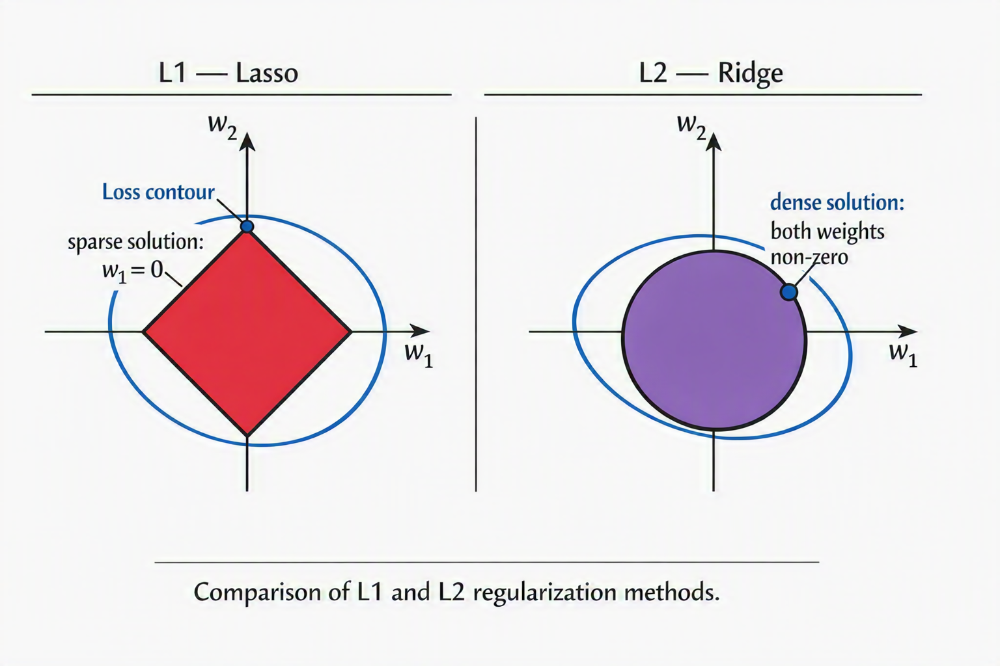
The regularised solution is where the loss contour first touches the constraint region. The diamond has corners on the axes — that is where the contour hits first. The sphere has no corners — the contour grazes it off-axis, leaving both weights non-zero.
Rule: use L1 when you suspect only a handful of features matter and want the model to select them. Use L2 (weight decay) as the default for neural networks — it is what kernel_regularizer=l2() in Keras does.
kernel_regularizer applies to weights only — not biases. This is the correct default.
During each training step, every neuron is independently switched off with probability $p$. The network that survives is a different random sub-network on every batch. At inference, all neurons are active and no masking occurs — Keras handles this automatically via the training flag.
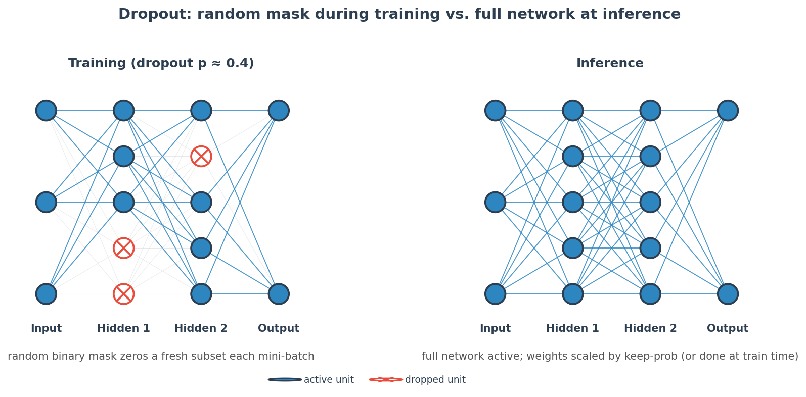
rate 0.2–0.4 — use 0.5 only on very large dense layers. Start at 0.3.
Before each activation, BatchNorm normalises the layer input to zero mean and unit variance across the mini-batch, then applies learnable scale $\gamma$ and shift $\beta$ to restore expressivity.
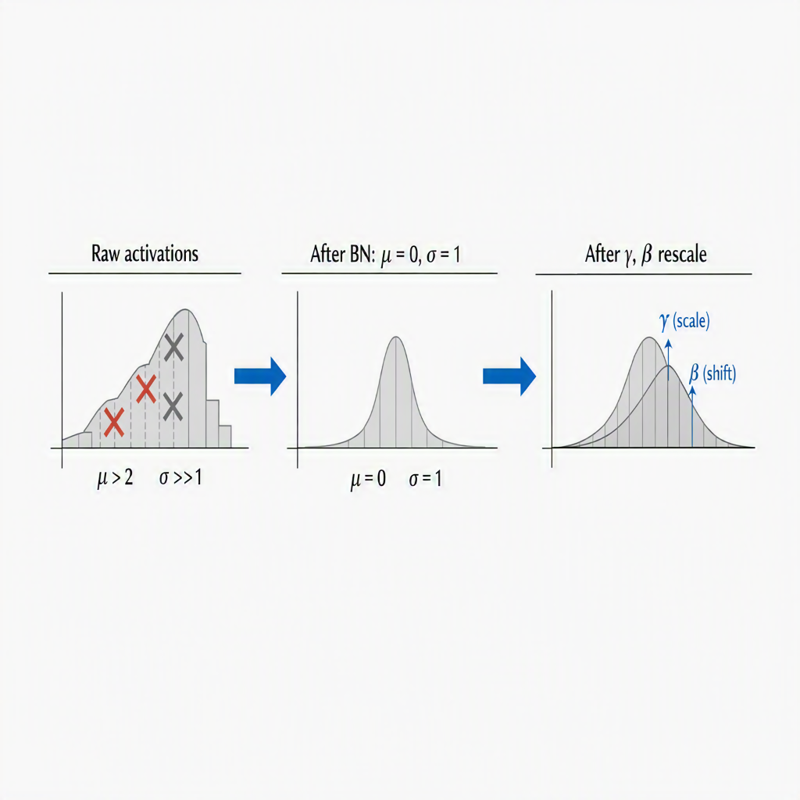
Placement: Dense → BN → activation → Dropout. BN before activation is the standard; results vary empirically but this order is the safe default.
Monitor validation loss each epoch. If it does not improve for patience epochs, halt training and restore the weights from the best checkpoint. This is the only regulariser that requires zero change to the model architecture.
patience 10–20
Always set restore_best_weights=True. Otherwise you receive the weights from the last epoch, not the best one.
Instead of training on hard one-hot targets (0 or 1), replace them with soft targets:
With $K$ classes and $\varepsilon=0.1$: a true-class label of 1 becomes 0.9; non-class labels of 0 become 0.01. The model cannot become infinitely confident — the loss gradient never goes to zero for any class. Standard for softmax outputs on production classification tasks; included by default in many training recipes.
Artificially expand the training distribution by applying label-preserving transforms: random crops, flips, rotations, brightness jitter, mixup. The model sees a slightly different version of each image on each epoch — it cannot memorise pixel values. This is domain-specific (images differ from tabular data or text) and is covered in implementation detail in Ch.7. The mechanism is regularisation: the effective dataset size grows without collecting new labels.
import tensorflow as tf
from tensorflow import keras
from tensorflow.keras import layers, regularizers
# --- Model: Dense + BN + Dropout + L2 ---
model = keras.Sequential([
layers.Input(shape=(n_features,)),
layers.Dense(128, kernel_regularizer=regularizers.l2(1e-4)),
layers.BatchNormalization(),
layers.Activation('relu'),
layers.Dropout(0.3),
layers.Dense(64, kernel_regularizer=regularizers.l2(1e-4)),
layers.BatchNormalization(),
layers.Activation('relu'),
layers.Dropout(0.3),
layers.Dense(n_classes, activation='softmax')
])
model.compile(
optimizer='adam',
loss=tf.keras.losses.CategoricalCrossentropy(
label_smoothing=0.1), # Label smoothing
metrics=['accuracy']
)
# --- Callbacks ---
early_stop = keras.callbacks.EarlyStopping(
monitor='val_loss',
patience=10,
restore_best_weights=True
)
# --- Training ---
history = model.fit(
X_train, y_train,
validation_data=(X_val, y_val),
epochs=200,
callbacks=[early_stop]
)
# Dropout disabled automatically during evaluation
loss, acc = model.evaluate(X_test, y_test)1e-4 + Dropout 0.3restore_best_weightslabel_smoothing=0.1 for multiclass softmaxkernel_regularizer only)val_loss, not val_accuracyA: L1. The constraint region is a diamond — loss contours touch it at a corner on an axis, which means one weight lands exactly at zero. L2's sphere has no corners; the contour grazes it off-axis, leaving all weights non-zero but small. Use L1 when you want feature selection. Use L2 as the default weight decay for neural networks.
A: It is disabled. Keras automatically sets training=False during model.predict() and model.evaluate(), which turns off the mask. With inverted dropout (TF default), activations are already scaled by $1/(1-p)$ during training, so no weight adjustment is needed at inference. The common wrong answer is "multiply weights by $(1-p)$" — that is the non-inverted version, which TF does not use.
A: Two paths to the same symptom. Vanishing: sigmoid derivative peaks at 0.25 — multiply through $L$ layers and gradients shrink as $0.25^L$. Exploding: singular values of weight Jacobians >1 — product grows as $\sigma_{\max}^L$. Fixes: (1) ReLU removes saturation. (2) He/Xavier init keeps values near 1 at the start. (3) Gradient clipping handles explosion mid-training. (4) BatchNorm stabilises activation scale throughout training. (5) Residual connections (Ch.7) provide a gradient highway that bypasses the problem structurally.
A: Yes — identical form, identical mathematical effect. $\mathcal{L} + \lambda\sum w_i^2$ is the Ridge objective. The difference is implementation: Ridge solves $w = (X^TX + \lambda I)^{-1}X^Ty$ analytically in one matrix inversion. Neural nets use gradient descent. The regularisation effect — shrink all weights proportionally, none to exactly zero — is the same.
A: Yes — they are complementary, not competing. BN targets training stability and gradient health; Dropout targets overfit. The interaction to watch: heavy Dropout (0.5) combined with BN can underfit, because BN already regularises via mini-batch noise. Reduce Dropout to 0.2–0.3 when BN is present. Order matters: Dense → BN → activation → Dropout. Putting Dropout before BN can corrupt BN's running mean and variance estimates.
Dense layers treat every pixel as an independent input — 38 million parameters for one layer of a 224×224 image. Convolutions share the same filter across every spatial location. That single insight makes deep vision possible and gives CNNs their structural advantage over fully-connected networks.
A convolution slides a small learnable filter over the input, computing a dot product at each position. The filter weights are shared across all spatial positions — the same 9 numbers detect a vertical edge at top-left and at bottom-right. This is why a Conv2D layer with 32 filters and a 3×3 kernel has only 32×9 = 288 weights for any input resolution.
| Symbol | Meaning | Common value |
|---|---|---|
| $n$ | Input spatial size (height or width) | 224 |
| $f$ | Filter (kernel) size | 3 |
| $p$ | Padding — zeros added around the border | 0 or 1 |
| $s$ | Stride — pixels skipped per filter step | 1 or 2 |
| $K$ | Number of filters = number of output channels | 32, 64, 128… |
After each activation, a pooling layer reduces spatial size by taking the maximum (or average) value in each non-overlapping window. A 2×2 MaxPool with stride 2 halves both dimensions, quartering the number of activations.
Each neuron in a feature map "sees" a region of the original input — its receptive field. With 3×3 filters and stride 1:
| Layer | Receptive field on input |
|---|---|
| Layer 1 | 3×3 |
| Layer 2 | 5×5 |
| Layer 3 | 7×7 |
| Layer $L$ | $(2L+1)\times(2L+1)$ |
Deep CNN neurons are local in terms of computation but global in terms of context. A neuron in layer 7 of a ResNet has seen the entire image — not because the filter is large, but because small local contexts compose.
Stacking conv layers creates a hierarchy of abstractions that mirrors how primate visual cortex processes images — a result confirmed empirically by visualising CNN filter activations.
| Model | Year | Key idea | Top-5 err. |
|---|---|---|---|
| LeNet-5 | 1998 | First practical CNN (digits) | — |
| AlexNet | 2012 | Deep CNN on GPU; ReLU; Dropout | 15.3% |
| VGG-16 | 2014 | 3×3 filters only; depth is all you need | 7.3% |
| ResNet-50 | 2015 | Skip connections → 50 layers training stably | 3.6% |
| EfficientNet | 2019 | Compound scaling (depth+width+res) | 1.8% |
ImageNet human-level error ≈ 5.1%. ResNet crossed it in 2015. Every architecture since ResNet uses some form of skip connection.
ResNet's key insight: instead of learning the mapping $H(x)$, let the layer learn the residual $F(x) = H(x) - x$. The output is then $H(x) = F(x) + x$. If the ideal transformation is close to identity, $F(x)$ just needs to be nearly zero — a far easier optimisation target.
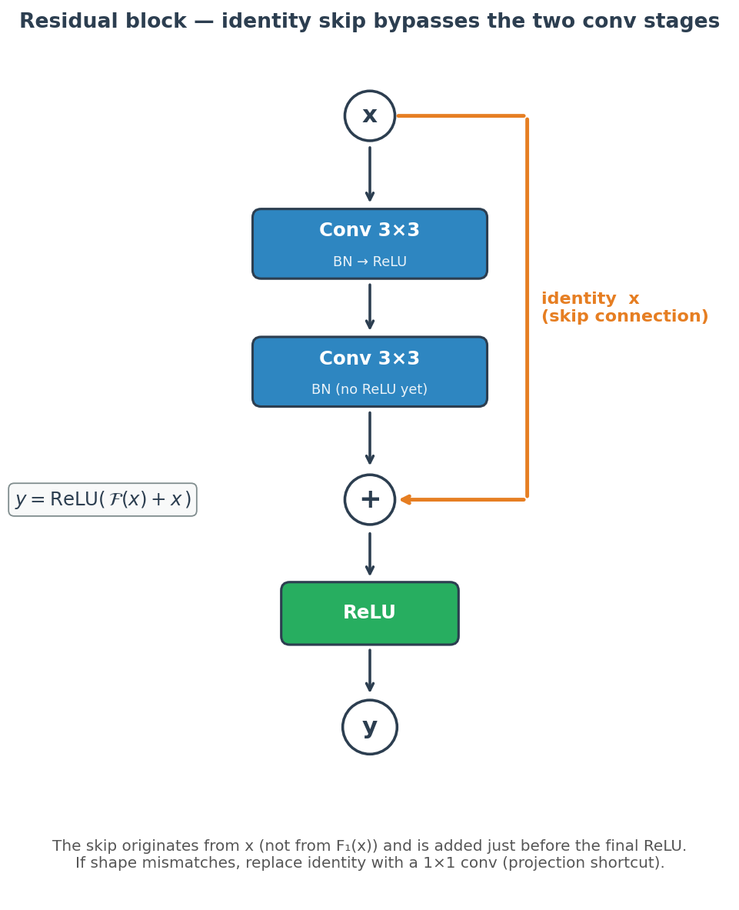
CNNs are prone to memorising not just labels but specific pixel arrangements. Data augmentation expands the effective dataset by applying label-preserving transforms on each epoch:
In Keras: wrap augmentation layers (RandomFlip, RandomRotation, RandomZoom) as the first layers of the model so they run on GPU and are disabled at inference automatically.
filter count ×2 per block — start 32→64→128. Receptive field grows with every conv layer regardless of filter count.
import tensorflow as tf
from tensorflow import keras
from tensorflow.keras import layers
# --- Data Augmentation ---
augment = keras.Sequential([
layers.RandomFlip("horizontal"),
layers.RandomRotation(0.1),
layers.RandomZoom(0.1),
], name="augmentation")
# --- Residual Block ---
def residual_block(x, filters, stride=1):
shortcut = x
x = layers.Conv2D(filters, 3, strides=stride,
padding='same', use_bias=False)(x)
x = layers.BatchNormalization()(x)
x = layers.Activation('relu')(x)
x = layers.Conv2D(filters, 3, padding='same',
use_bias=False)(x)
x = layers.BatchNormalization()(x)
# Projection shortcut if shape changes
if stride != 1 or shortcut.shape[-1] != filters:
shortcut = layers.Conv2D(
filters, 1, strides=stride,
padding='same', use_bias=False)(shortcut)
shortcut = layers.BatchNormalization()(shortcut)
x = layers.Add()([x, shortcut]) # F(x) + x
x = layers.Activation('relu')(x)
return x
# --- Mini-ResNet ---
inputs = keras.Input(shape=(32, 32, 3))
x = augment(inputs)
x = layers.Conv2D(32, 3, padding='same', use_bias=False)(x)
x = layers.BatchNormalization()(x)
x = layers.Activation('relu')(x)
x = residual_block(x, 32)
x = residual_block(x, 64, stride=2) # halves spatial size
x = residual_block(x, 128, stride=2)
x = layers.GlobalAveragePooling2D()(x)
x = layers.Dense(10, activation='softmax')(x)
model = keras.Model(inputs, x)
model.compile(
optimizer='adam',
loss='sparse_categorical_crossentropy',
metrics=['accuracy']
)
early_stop = keras.callbacks.EarlyStopping(
monitor='val_loss', patience=10,
restore_best_weights=True)
history = model.fit(
X_train, y_train,
validation_data=(X_val, y_val),
epochs=100, callbacks=[early_stop]
)padding='same' to preserve spatial sizeuse_bias=False before BN — BN's β already shiftskeras.applications.ResNet50(weights='imagenet', include_top=False) and fine-tune the last few residual blocks only.
A: No parameter sharing. A Dense layer connecting to 224×224×3 input with 256 units needs 38.5M weights — just for one layer. A Conv2D(256, 3) needs 256×3×3×3 = 6,912 weights, regardless of input resolution. More importantly, Dense layers have no concept of spatial proximity — the pixel at (0,0) has no privileged relationship with (0,1). Convolutions exploit that adjacency by design.
A: $\lfloor(n + 2p - f)/s\rfloor + 1$. Example: input 28×28, filter 5×5, padding 0, stride 1 → $\lfloor(28+0-5)/1\rfloor+1 = 24$. Output is 24×24. With padding=2, stride=1 → $\lfloor(28+4-5)/1\rfloor+1 = 28$ — same size preserved. With stride=2, padding=0 → $\lfloor(28-5)/2\rfloor+1 = 12$ — halved. Interviewers ask this directly — memorise the formula.
A: The output is $F(x)+x$, so $\partial\text{output}/\partial x = \partial F/\partial x + 1$. During backpropagation the "+1" term provides a direct gradient path that bypasses all the layers in $F(x)$. Even if $\partial F/\partial x \approx 0$ (vanished), the total gradient is still 1. This allows stable training of networks with 50, 100, even 1000 layers.
A: The receptive field of a neuron is the region of the original input it can "see" — the spatial extent that affects its activation. With 3×3 filters and stride 1, each layer adds 2 to the receptive field per side. After $L$ layers: $(2L+1)\times(2L+1)$. After 7 layers: 15×15 on the input. This is why deep CNNs can capture global context despite using only small local filters — the composition of local views creates global sight.
A: Both halve spatial size. MaxPool uses a fixed rule (take the max); strided convolution learns the downsampling. Modern architectures (ResNet, EfficientNet, ConvNeXt) prefer strided convolutions — fewer hyperparameters, the reduction is trained end-to-end, and empirically similar or better accuracy. MaxPool persists in legacy architectures (VGG) and in specific cases where explicit translation invariance is desired.
Flatten before the final Dense when GlobalAveragePooling would do. GAP is invariant to spatial position and has far fewer parameters.Dense layers have no concept of order. CNNs see local windows. Neither can model a dependency between token 1 and token 500 in a sentence. Recurrent networks pass hidden state forward through time — but the plain RNN forgets. The LSTM fixes that with three gates and a cell state that accumulates without multiplicative decay.
The plain RNN computes $h_t = \tanh(W_h h_{t-1} + W_x x_t + b)$ — one matrix multiplication per step. Gradients backpropagate by multiplying $W_h$ at every timestep. If the spectral radius of $W_h$ exceeds 1, they explode; if below 1, they vanish. The LSTM replaces the single multiplicative path with an additive cell state that gates what to retain, write, and expose.
| Gate | What it controls | Range |
|---|---|---|
| Forget $f_t$ | What fraction of old cell state $C_{t-1}$ survives. $f_t=0$: erase all. $f_t=1$: keep all. | [0,1] |
| Input $i_t$ | How much of the candidate $\tilde{C}_t$ to write in. Controls how strongly the current input updates memory. | [0,1] |
| Candidate $\tilde{C}_t$ | Proposed new content from $h_{t-1}$ and $x_t$. Not self-gated — scaled by $i_t$. | [−1,1] |
| Output $o_t$ | What portion of $\tanh(C_t)$ to expose as $h_t$. Decouples cell memory from what the next layer sees. | [0,1] |
Training an RNN means computing $\partial L / \partial W_h$. Because the same $W_h$ appears at every timestep, the chain rule unrolls the graph across all $T$ steps:
| Criterion | LSTM | GRU |
|---|---|---|
| Parameters | 4 weight matrices | 3 matrices — 25% fewer |
| Cell state | Separate $C_t$ and $h_t$ | Merged into single $h_t$ |
| Long sequences | Marginal advantage (>500 tokens) | Competitive; much faster |
| Default? | Only for very long context | Yes — try first |
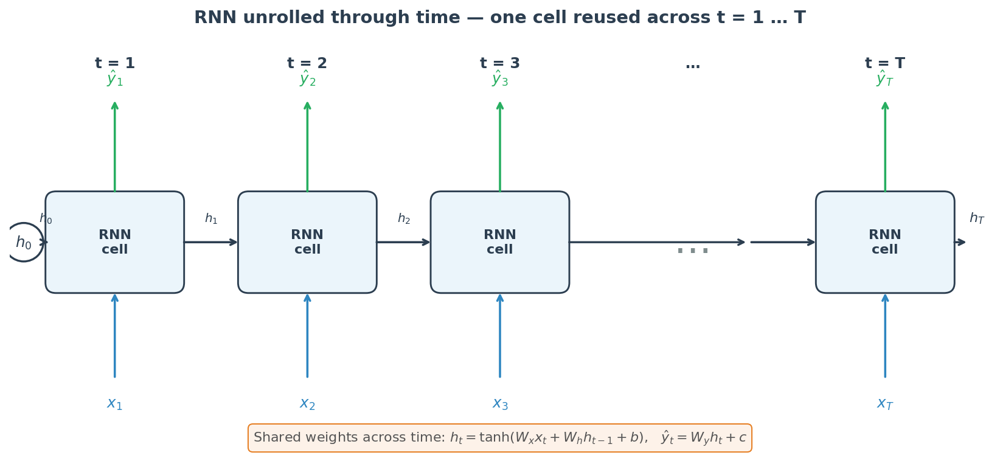
Keras LSTM/GRU expects (batch, timesteps, features). Every sequence in a batch must have the same length — pad with zeros using pad_sequences, then use a Masking layer so padded zeros do not contribute to gradients.
| Task | First layer output | Last recurrent layer |
|---|---|---|
| Sequence classification | (B, T, units) | return_sequences=False → Dense |
| Sequence labelling | (B, T, units) | return_sequences=True → TimeDistributed(Dense) |
| Stacked LSTM/GRU | must be (B, T, units) | all but last: return_sequences=True |
| Bidirectional | (B, T, 2×units) | output doubled by concatenation |
dropout argument which only drops input connections.dropout vs recurrent_dropout. Setting dropout=0.3 in LSTM(units, dropout=0.3) drops input-to-hidden connections. recurrent_dropout drops hidden-to-hidden connections and reuses the same mask at every timestep. Using a standalone Dropout() layer between timestep outputs in a manual loop is incorrect — use the built-in argument.
import tensorflow as tf
from tensorflow import keras
from tensorflow.keras import layers
# ── Sequence classification: stacked Bidirectional GRU ──────────
model = keras.Sequential([
layers.Input(shape=(max_len,)),
layers.Embedding(vocab_size, embed_dim, mask_zero=True), # mask_zero propagates masking
layers.Bidirectional(
layers.GRU(128, return_sequences=True,
dropout=0.1, recurrent_dropout=0.1)),
layers.Bidirectional(
layers.GRU(64, dropout=0.1)), # last recurrent layer: return_sequences=False
layers.Dense(64),
layers.BatchNormalization(),
layers.Activation('relu'),
layers.Dropout(0.3),
layers.Dense(n_classes, activation='softmax'),
])
model.compile(
optimizer=keras.optimizers.Adam(
learning_rate=1e-3, clipnorm=1.0), # ← always clip
loss='sparse_categorical_crossentropy',
metrics=['accuracy'],
)
# ── Time-series regression: stacked LSTM ────────────────────────
ts_model = keras.Sequential([
layers.Input(shape=(timesteps, n_features)),
layers.Masking(mask_value=0.0), # if padded
layers.LSTM(128, return_sequences=True,
dropout=0.1, recurrent_dropout=0.1),
layers.LSTM(64, dropout=0.1),
layers.Dense(32, activation='relu'),
layers.Dense(1), # regression output
])
ts_model.compile(
optimizer=keras.optimizers.Adam(clipnorm=1.0),
loss='mse',
metrics=['mae'],
)
early_stop = keras.callbacks.EarlyStopping(
monitor='val_loss', patience=10,
restore_best_weights=True,
)
history = model.fit(
X_train, y_train,
validation_data=(X_val, y_val),
epochs=50,
callbacks=[early_stop],
)(batch, timesteps, features)mask_zero=True on Embeddingreturn_sequences=Trueclipnorm=1.0 always — exploding gradients fail silentlyrecurrent_dropout, not standalone Dropout between stepsreturn_sequences mismatch. A stacked LSTM where the first layer omits return_sequences=True outputs shape (batch, units) — a 3-D-expecting second LSTM will throw a shape error. Set return_sequences=True on every recurrent layer except the final one (unless using TimeDistributed output).
A: The gradient $\partial h_t / \partial h_k$ involves a product of $t-k$ Jacobian matrices, each containing $W_h$. If the spectral radius of $W_h < 1$, this product shrinks exponentially — vanishing gradient. The LSTM replaces the multiplicative hidden-to-hidden path with an additive cell state update: $C_t = f_t \odot C_{t-1} + i_t \odot \tilde{C}_t$. The cell state gradient at each step is simply $f_t$ — element-wise, close to 1, no matrix product. This allows gradients to propagate across hundreds of timesteps.
A: Forget gate $f_t$: sigmoid in [0,1] — multiplies $C_{t-1}$ to decide what fraction of old memory to discard. $f_t = 0$ wipes memory; $f_t = 1$ preserves it entirely. Input gate $i_t$: sigmoid in [0,1] — scales how much of the new candidate $\tilde{C}_t$ to write into $C_t$. Candidate $\tilde{C}_t$: tanh in [−1,1] — proposed new content from current input and previous hidden state. Output gate $o_t$: sigmoid in [0,1] — determines what portion of $\tanh(C_t)$ to expose as $h_t$, decoupling internal memory from what the next layer receives.
A: GRU as the default. It has fewer parameters (3 weight matrices vs 4), trains faster, and performs comparably on most sequence tasks. LSTM when sequences exceed ~500 tokens and long-range dependencies are critical — LSTM's separate cell state $C_t$ gives a marginal advantage at very long context. In practice: benchmark both; GRU wins on speed, LSTM may win on accuracy at large scale. Neither works reliably without gradient clipping.
A: Backpropagation Through Time — unfold the RNN across all $T$ timesteps, treat it as a $T$-layer deep net with shared weights, apply standard backprop. Memory cost is $\mathcal{O}(T)$ — impractical for long sequences. Truncated BPTT limits unrolling to $k$ steps: compute gradients, update weights, advance $k$ steps, repeat. Long-range dependencies beyond $k$ are lost, but training is feasible. In Keras, this is handled via stateful=True with manual state resets between chunks.
A: When the full sequence is not available at inference time. Bidirectional LSTM runs one forward and one backward pass — the backward pass reads the future. This is fine for text classification, NER, or batch inference. It is impossible for autoregressive generation (language modelling, chatbot responses), streaming applications, or real-time time-series prediction where future tokens do not yet exist. The correct architecture for generation is a unidirectional LSTM or a decoder-only Transformer.
clipnorm=1.0 — RNN gradients explode silently, producing NaN loss with no warning. Always clip.return_sequences=False on the first of two stacked LSTMs — causes a shape error that is easy to misread.Dropout() layer between recurrent steps — use recurrent_dropout inside the LSTM call so the same mask applies at every timestep.tf.RaggedTensor.Every metric encodes a judgment about which type of error matters more. Choosing accuracy when classes are imbalanced, ROC-AUC when positive rate is 1%, or BLEU when semantic correctness matters — each is the wrong answer. This chapter maps every metric to its purpose, its failure mode, and the scenario where it is the correct default.
All regression metrics measure the gap between $\hat{y}$ and $y$ — but they differ in how they weight that gap and what they communicate to a stakeholder.
| Metric | Units | Outlier sensitivity | Interpretability |
|---|---|---|---|
| MSE | y² | High — squares errors | Low (squared units) |
| MAE | y | Low — linear | High (same units as y) |
| RMSE | y | High — squares then roots | High (same units as y) |
| R² | Unitless [−∞,1] | Moderate | High — fraction of variance explained |
| Adj-R² | Unitless | Moderate | High — penalises extra features |
| Scenario | Metric | Why |
|---|---|---|
| Balanced classes | Accuracy or F1 | Fair when positive/negative equally common |
| Class imbalance (99/1) | PR-AUC or F1 | Accuracy trivially 99% by predicting majority |
| FP is costly (spam filter) | Precision | Don't flag real emails as spam |
| FN is costly (cancer screen) | Recall (or F₂) | Don't miss a positive case |
| Calibrated probabilities | Log-loss | Penalises confident wrong predictions |
| Ranking quality | AUC-ROC | Threshold-independent; P(pos ranked above neg) |
A model is calibrated if of all samples where $p = 0.7$, exactly 70% are positive. Most neural networks are overconfident — they push probabilities toward 0 and 1. This matters whenever the downstream decision uses probabilities, not just class labels.
Bin predictions by confidence (0–0.1, 0.1–0.2, …). For each bin, plot mean confidence vs mean accuracy. A perfectly calibrated model lies on the diagonal. Overconfident models curve above it.
Fix: temperature scaling — divide logits by scalar $T > 1$ before softmax. Does not change accuracy or AUC (ranking is preserved), only the probability magnitudes. Tune $T$ on a held-out validation set by minimising log-loss. One-parameter fix.
The default threshold of 0.5 optimises accuracy. Shift it to hit a specific business operating point:
import numpy as np
from sklearn.metrics import (
classification_report, roc_auc_score,
average_precision_score, log_loss,
mean_squared_error, mean_absolute_error, r2_score,
precision_recall_curve,
)
from sklearn.calibration import calibration_curve
import tensorflow as tf
from tensorflow import keras
# ── Regression metrics ───────────────────────────────────────────
y_pred = model.predict(X_test).squeeze()
mse = mean_squared_error(y_test, y_pred)
mae = mean_absolute_error(y_test, y_pred)
rmse = np.sqrt(mse)
r2 = r2_score(y_test, y_pred)
n, p = len(y_test), X_test.shape[1]
adj_r2 = 1 - (1 - r2) * (n - 1) / (n - p - 1)
# ── Classification metrics ───────────────────────────────────────
probs = model.predict(X_test) # shape (n, n_classes)
preds = probs.argmax(axis=1)
print(classification_report(y_test, preds))
auc_roc = roc_auc_score(y_test, probs[:, 1]) # binary
pr_auc = average_precision_score(y_test, probs[:, 1])
logloss = log_loss(y_test, probs)
# ── Threshold selection (binary) — use val set, never test set ──
probs_val = model.predict(X_val) # separate val-set inference
prec, rec, thresholds = precision_recall_curve(
y_val, probs_val[:, 1])
# Find threshold giving Recall >= 0.90 on val set
idx = np.searchsorted(rec[::-1], 0.90)
best_thr = thresholds[::-1][idx]
preds_thr = (probs[:, 1] >= best_thr).astype(int) # apply locked threshold to test set
# ── Calibration check ────────────────────────────────────────────
fraction_pos, mean_pred = calibration_curve(
y_test, probs[:, 1], n_bins=10)
# plot mean_pred (x) vs fraction_pos (y) — diagonal = perfect
# ── Temperature scaling (inference only) ─────────────────────────
T = 1.5 # tune on val set by minimising log-loss
logits = pre_softmax_model.predict(X_val)
cal_probs = tf.nn.softmax(logits / T).numpy()
# ── Keras built-in metrics ───────────────────────────────────────
model.compile(
optimizer='adam',
loss='binary_crossentropy',
metrics=[
keras.metrics.AUC(name='auc_roc'),
keras.metrics.AUC(curve='PR', name='pr_auc'),
keras.metrics.Precision(name='precision'),
keras.metrics.Recall(name='recall'),
],
)predict_proba() in sklearn. The same AUC-ROC, F1, precision-recall trade-off, and calibration considerations carry over. The difference is in the model mechanism, not the evaluation framework.
A: A dataset with 99% negative and 1% positive achieves 99% accuracy by predicting "negative" for every sample — without learning a single pattern. Accuracy = (TP+TN)/(TP+TN+FP+FN) is dominated by TN in imbalanced settings. Use F1, Precision, Recall, or PR-AUC instead. ROC-AUC is better than accuracy but still flatters at extreme imbalance because the large TN count keeps FPR = FP/(FP+TN) artificially low.
A: When the positive class is rare (positive rate <10%). ROC-AUC measures P(positive ranked above negative) — the large TN count in an imbalanced dataset keeps FPR low even for poor models. PR-AUC uses Precision = TP/(TP+FP), which does not involve TN. A model flagging 10% of a 1% positive dataset immediately shows Precision ≤ 10% on the PR curve. Use ROC-AUC for balanced datasets where overall ranking quality matters; use PR-AUC when the minority class is what you actually care about.
A: Perplexity = $2^H$ where $H$ is per-token entropy on a test corpus — lower is better, meaning the model assigns higher average probability to the correct next token. You cannot compare perplexity across models using different tokenisers: a model with a larger vocabulary produces lower perplexity on the same text not because it is smarter but because its tokens are longer (fewer prediction steps). Comparison is valid only under identical tokenisation and test corpus.
A: A calibrated model produces probabilities that match empirical frequency: of all samples where the model says 70% confidence, 70% should actually be positive. Neural networks are typically overconfident — they push probabilities toward 0 and 1. Diagnose with a reliability diagram (bin predictions by confidence; compare mean confidence to mean accuracy per bin). Fix with temperature scaling: divide logits by scalar $T > 1$ before softmax. This does not change accuracy or AUC, only the probability magnitudes. Tune $T$ on a held-out validation set by minimising log-loss.
A: Semantic correctness. BLEU counts n-gram overlap — "The cat sat on the mat" and "The mat sat on the cat" share identical unigrams (same word multiset) but have opposite meanings. 2-gram precision is already only 80% between them ("cat sat" does not appear in the second), and BLEU would still give a high score despite an inverted meaning. BLEU also penalises paraphrasing: a semantically correct synonym is treated as wrong. For semantic quality use BERTScore (embedding similarity) or ROUGE-L (longest common subsequence for summarisation). BLEU remains the standard for machine translation benchmarks for historical comparability, not because it is optimal.
r2_score handles this correctly but be careful with custom implementations.A decision tree recursively partitions feature space using axis-aligned splits. At each node it asks: which feature and threshold produces the purest children? Purity is measured by Gini impurity or information entropy.
KNN stores the entire training set. At prediction time, it finds the $k$ closest training points by distance and returns the majority class. There is no training step — the model is the training data.
StandardScaler or MinMaxScaler before fitting.
weights='distance' in sklearn. Useful when k must be large to filter noise.
| Dial | Too High | Too Low | Start |
|---|---|---|---|
| max_depth | Memorises noise | Underfit | 3–8 |
| min_samples_split | Underfit | Overfit | 2–20 |
| min_samples_leaf | Underfit | Overfit | 1–10 |
| criterion | gini ≈ entropy; gini faster | gini | |
| Dial | Too High | Too Low | Start |
|---|---|---|---|
| k | High bias, smooth boundary | Memorises noise | √n |
| metric | euclidean default; cosine for text | euclidean | |
| weights | 'uniform' or 'distance' | uniform | |
| Criterion | Decision Tree | Logistic Regression | KNN |
|---|---|---|---|
| Decision boundary | Axis-aligned rectangles | Linear hyperplane | Non-linear, local |
| Feature scaling needed? | No | Yes (regularisation) | Yes (distance) |
| Handles non-linearity? | Yes (depth ≥ 2) | No (linear only) | Yes (local) |
| Probabilistic output? | Rough (leaf freq.) | Yes (calibrated) | Rough (vote frac.) |
| Interpretability | High (tree path) | High (coefficients) | None |
| Scales to large n? | Yes | Yes | No (O(nd) predict) |
| Scales to large d? | Degrades on irrelevant features | Regularisation helps | Fails (curse of dim.) |
| Missing values? | Handles natively | Requires imputation | Requires imputation |
| Best for | Mixed types, interactions, explainability | Calibrated probs, linear boundary | Small datasets, local pattern baseline |
from sklearn.tree import DecisionTreeClassifier
from sklearn.neighbors import KNeighborsClassifier
from sklearn.linear_model import LogisticRegression
from sklearn.preprocessing import StandardScaler
from sklearn.model_selection import cross_val_score
import numpy as np
# ── Decision Tree ────────────────────────────────
dt = DecisionTreeClassifier(
criterion='gini',
max_depth=5, # dial: controls overfitting
min_samples_leaf=4, # dial: minimum node size
random_state=42
)
dt.fit(X_train, y_train)
# Feature importance (Gini reduction per feature)
importances = dt.feature_importances_ # use for feature selection
# ── KNN (always scale first!) ────────────────────
scaler = StandardScaler()
X_tr_sc = scaler.fit_transform(X_train)
X_te_sc = scaler.transform(X_test) # transform, NOT fit_transform
knn = KNeighborsClassifier(
n_neighbors=7, # dial: try sqrt(n_train)
metric='euclidean',
weights='distance' # closer neighbours weighted more
)
knn.fit(X_tr_sc, y_train)
# ── Logistic Regression (baseline) ──────────────
lr = LogisticRegression(
C=1.0, # dial: inverse regularisation strength
max_iter=1000,
random_state=42
)
lr.fit(X_tr_sc, y_train)
# ── Compare via cross-validation ─────────────────
for name, mdl, X in [('DT', dt, X_train),
('KNN', knn, X_tr_sc),
('LR', lr, X_tr_sc)]:
s = cross_val_score(mdl, X, y_train, cv=5, scoring='f1')
print(f"{name}: {s.mean():.3f} ± {s.std():.3f}")
Decision Trees
KNN
Selection
dt.feature_importances_ returns total Gini reduction per feature. Use this to select features before feeding into more expensive models.
In practice, both produce nearly identical trees. Gini avoids log computation and is marginally faster. Entropy is slightly more informative when splits are very unequal. sklearn defaults to Gini. The meaningful choice is max_depth, not the criterion — and cross-validation will call the bluff either way.
An unconstrained tree grows until every leaf is pure, memorising the training set. Fix: set max_depth (3–8), min_samples_leaf (≥4), or min_samples_split. Better still: use Random Forest (bagging, reduces variance) or XGBoost (boosting, reduces bias sequentially). Both use decision trees as the base learner.
KNN computes Euclidean distance. A feature with range [0, 10,000] contributes 10,000× more to distance than one with range [0, 1] — it completely dominates the neighbourhood. StandardScaler (zero mean, unit variance) makes every feature contribute proportionally. Always fit the scaler on training data only, then transform both train and test.
LR wins when the boundary is linear, when you need calibrated probabilities, or when features are continuous and well-scaled. DT wins when features interact (XOR-like structure), when data includes mixed types or missing values, or when you need a visual explanation that non-technical stakeholders can follow. Cross-validate both; the accuracy gap reveals the boundary shape.
All training points vote, so the model predicts the majority class everywhere — maximum bias, zero variance, useless classifier. As k → 1, the model memorises training data: 0% training error, high variance. The optimal k lives between these extremes and is found via cross-validation. Use odd k for binary classification to break ties.
SVM finds the hyperplane that maximises the margin — the gap between the two class boundaries. Only the training points on the margin boundary (support vectors) define the hyperplane. All other points are irrelevant once training is complete.
SVR(kernel='rbf', C=1.0, epsilon=0.1) in sklearnNon-linearly separable data in the original space may become linearly separable in a higher-dimensional space. The kernel trick computes the inner product in that high-d space without explicitly mapping there.
| Kernel | Formula | When to use |
|---|---|---|
| Linear | $\mathbf{x}^\top\mathbf{x'}$ | Linearly separable; large n |
| RBF / Gaussian | $\exp(-\gamma\|\mathbf{x}-\mathbf{x'}\|^2)$ | Default; unknown structure |
| Polynomial | $(\mathbf{x}^\top\mathbf{x'} + c)^d$ | Structured feature interactions |
gamma='scale' (1 / (n_features × X.var()))LinearSVC or kernel approximations (Nystroem).
XGBoost fits shallow trees sequentially. Each tree fits the negative gradient of the loss (pseudo-residuals) from all previous trees. The final prediction is the sum of all tree outputs scaled by the learning rate.
| Dial | Too High | Too Low | Start |
|---|---|---|---|
| n_estimators | Overfit (slow) | Underfit | 100–1000 |
| learning_rate (η) | Overfit quickly | Needs more trees | 0.05–0.3 |
| max_depth | Overfit, slow | Underfits | 3–6 |
| subsample | Low variance reduction | Underfit | 0.6–0.9 |
| colsample_bytree | Low diversity | Underfit | 0.6–0.9 |
| reg_alpha (L1) | Too sparse | No reg | 0–1 |
| reg_lambda (L2) | Underfit | No reg | 1 (default) |
| Property | XGBoost | Random Forest |
|---|---|---|
| Training | Sequential (boosting) | Parallel (bagging) |
| What it reduces | Bias | Variance |
| Typically more accurate? | Yes (on tabular) | Competitive baseline |
| Overfit risk | Higher (more dials) | Lower |
| Missing values | Handles natively | Needs imputation |
| Built-in regularisation | L1 + L2 | max_features only |
| Speed | Slower to tune | Faster, fewer dials |
| Interpretability | feature_importances_ | feature_importances_ |
early_stopping_rounds=50) and train with a low η (0.01–0.05). Let the number of trees be determined by when val loss stops improving.
from sklearn.svm import SVC, SVR
from sklearn.preprocessing import StandardScaler
from sklearn.ensemble import RandomForestClassifier
import xgboost as xgb
# ── SVM (always scale!) ──────────────────────────
scaler = StandardScaler()
X_tr_sc = scaler.fit_transform(X_train)
X_te_sc = scaler.transform(X_test)
svm = SVC(
kernel='rbf', # 'linear', 'poly', 'rbf'
C=1.0, # dial: soft margin penalty
gamma='scale', # dial: RBF width
probability=True # enables predict_proba (slower)
)
svm.fit(X_tr_sc, y_train)
# n_support_: inspect support vector counts per class
# ── Random Forest (baseline ensemble) ───────────
rf = RandomForestClassifier(
n_estimators=200,
max_depth=None, # fully grown trees (pruned by min_samples)
max_features='sqrt', # feature subsampling per split
random_state=42
)
rf.fit(X_train, y_train)
# ── XGBoost ──────────────────────────────────────
model = xgb.XGBClassifier(
n_estimators=500,
learning_rate=0.05, # dial: low LR + many trees
max_depth=4, # dial: shallow trees reduce overfit
subsample=0.8, # stochastic boosting
colsample_bytree=0.8,
reg_lambda=1.0, # L2 regularisation
early_stopping_rounds=50,
use_label_encoder=False,
eval_metric='logloss',
random_state=42
)
model.fit(
X_train, y_train,
eval_set=[(X_val, y_val)],
verbose=False
)
print("Best iteration:", model.best_iteration)
SVM
Bagging / RF
XGBoost
oob_score=True.
Non-linearly separable data may become linearly separable in a higher-dimensional space. The kernel trick computes the inner product in that space via K(x,x′) = φ(x)·φ(x′) — without ever explicitly computing φ(x). The RBF kernel corresponds to an infinite-dimensional feature space. No explicit mapping = no storage cost.
C is the penalty per misclassified training point. Large C: the model tries hard to classify everything correctly → narrow margin, high variance, overfit risk. Small C: tolerates errors → wide margin, simpler boundary, possibly underfit. C is the inverse of L2 regularisation strength.
Bagging trains trees independently on bootstrap samples and averages. Independent trees have uncorrelated errors; averaging reduces variance. Boosting trains trees sequentially; each tree fits the residual errors of the ensemble so far, targeting the remaining bias. XGBoost adds L1/L2 regularisation on top of gradient boosting to prevent overfit.
Boosting corrects errors sequentially → consistently lower bias. XGBoost adds built-in L1/L2 regularisation, handles missing values natively (learns best default direction at each split), uses second-order gradients (Newton boosting) for faster convergence, and histogram binning for speed. Random Forest is more robust to noise and requires less tuning.
SVR ignores prediction errors smaller than ε. Points within the ε-tube contribute nothing to the loss or to the model. Only points outside the tube (support vectors) define the regression function. Larger ε = fewer support vectors = simpler, smoother model. C still controls how harshly violations beyond ε are penalised.
Supervised learning requires labels. Most data has none. Clustering finds structure by grouping similar points — without knowing what the groups mean. K-Means assumes spherical clusters and known k. DBSCAN finds arbitrary shapes and flags outliers. HDBSCAN handles varying density without requiring ε. The output of any clusterer is also a feature set for the supervised model downstream.
K-Means partitions $n$ points into $k$ clusters by alternating between assignment (each point joins its nearest centroid) and update (each centroid becomes the mean of its cluster). It converges in finite steps but makes strong geometric assumptions.
max_iter reached.n_init=10 times; keep lowest inertia.Plot inertia vs $k$. As $k$ increases, inertia always decreases (adding a cluster always reduces within-cluster variance). The optimal $k$ is where the marginal decrease flattens — the "elbow". Elbow is subjective; combine with Silhouette score (Ch.14) for a quantitative criterion.
| Type | Definition | Role |
|---|---|---|
| Core | ≥ min_samples points within radius ε (including itself) | Seeds and expands clusters |
| Border | < min_samples within ε but within ε of a core point | Belongs to a cluster; does not expand it |
| Noise | Not within ε of any core point | Assigned label −1 (outlier) |
Cluster expansion: start from a core point; add all density-reachable points (connected through chains of core points within ε). Two core points are density-connected if there is a chain of core points between them. This allows arbitrary cluster shapes.
| Criterion | K-Means | DBSCAN |
|---|---|---|
| Cluster shape | Spherical only | Arbitrary |
| k required? | Yes | No |
| Outlier handling | Assigned to nearest centroid | Labelled noise (−1) |
| Varying density | Fails silently | Fails if density difference large |
| Scale? (ε, min_samples) | Standardise only | Must standardise — ε is in feature space |
| Complexity | O(nkd·iter) | O(n log n) with index |
| Algorithm | Parameter | Too high | Too low | Start |
|---|---|---|---|---|
| K-Means | n_clusters k | Splits real clusters | Merges distinct clusters | Elbow + Silhouette |
| K-Means | n_init | Slower, diminishing gains | Bad local minima | 10 |
| DBSCAN | eps ε | Merges all into one cluster | All points become noise | k-distance knee |
| DBSCAN | min_samples | More noise points | Noise classified as clusters | 2×d (d = n_features) |
| HDBSCAN | min_cluster_size | Only large clusters survive | Fragments data | 5–50 |
Clustering outputs are often more useful as features for a downstream supervised model than as final results. Three strategies:
K-Means assigns each point a cluster label (0, 1, …, k−1). One-hot-encode for tree models; embed for neural nets. Captures non-linear groupings that linear features miss. Use kmeans.predict(X_new) on new data.
kmeans.transform(X) returns a matrix of shape $(n, k)$ — the distance from each point to each centroid. Each column is a continuous feature encoding "how far is this point from cluster $k$?" Useful when cluster affinity is gradual rather than hard.
hdbscan.probabilities_ gives each point a membership probability in its assigned cluster. Points near cluster centres get values near 1; ambiguous points get values near 0. Use as a numeric confidence feature. Points labelled noise (−1) can be flagged as a binary outlier feature.
predict() or transform() on test data. Clustering both together leaks test distribution into the training features — a subtle but severe form of data leakage.
import numpy as np
from sklearn.preprocessing import StandardScaler
from sklearn.cluster import KMeans, DBSCAN
from sklearn.metrics import silhouette_score, davies_bouldin_score
import hdbscan # pip install hdbscan
# ── Preprocessing (mandatory — ε and inertia are distance-based) ─
scaler = StandardScaler()
X_train = scaler.fit_transform(X_train_raw)
X_test = scaler.transform(X_test_raw) # fit on train only
# ── K-Means — elbow method ───────────────────────────────────────
inertias, sil_scores = [], []
for k in range(2, 11):
km = KMeans(n_clusters=k, n_init=10, random_state=42)
labels = km.fit_predict(X_train)
inertias.append(km.inertia_)
sil_scores.append(silhouette_score(X_train, labels))
# pick k at elbow of inertias or peak of sil_scores
best_k = 3 # chosen from plots
kmeans = KMeans(n_clusters=best_k, n_init=10, random_state=42)
kmeans.fit(X_train)
# Cluster features for downstream model
cluster_labels = kmeans.predict(X_train) # (n_train,)
centroid_dists = kmeans.transform(X_train) # (n_train, k)
# ── DBSCAN ──────────────────────────────────────────────────────
dbscan = DBSCAN(eps=0.5, min_samples=5)
db_labels = dbscan.fit_predict(X_train)
n_clusters = len(set(db_labels)) - (1 if -1 in db_labels else 0)
n_noise = (db_labels == -1).sum()
# ── HDBSCAN ─────────────────────────────────────────────────────
clusterer = hdbscan.HDBSCAN(
min_cluster_size=10,
min_samples=5,
prediction_data=True, # required for predict on new points
)
clusterer.fit(X_train)
labels_train = clusterer.labels_ # -1 = noise
probs_train = clusterer.probabilities_ # soft membership
# Apply to test (requires prediction_data=True)
labels_test, strengths_test = hdbscan.approximate_predict(
clusterer, X_test)
# ── Evaluation (internal metrics — no labels needed) ─────────────
sil = silhouette_score(X_train, labels_train)
db = davies_bouldin_score(X_train, labels_train)
print(f"Silhouette: {sil:.3f} (higher better, max 1)")
print(f"Davies-Bouldin: {db:.3f} (lower better)")StandardScaler before clustering — distances are distorted by scalen_init=10; report lowest inertiapredict/transform on testkmeans.transform()A: K-Means fails when clusters are non-spherical (rings, crescents, elongated shapes), when cluster sizes differ greatly, or when outliers are present — it assigns every point to a centroid with no noise concept. The inertia drops as k increases so the elbow is sometimes ambiguous. Use DBSCAN for arbitrary shapes and built-in outlier detection; HDBSCAN when density varies across clusters or when you need soft membership probabilities. If k is truly unknown and shapes are complex, HDBSCAN is usually the better default.
A: With parameters ε (radius) and min_samples: a core point has at least min_samples points within radius ε (including itself) — it is dense enough to anchor a cluster and expands it. A border point has fewer than min_samples within ε but lies within ε of a core point — it belongs to the cluster without expanding it. A noise point is not within ε of any core point — it is labelled −1. Critically, noise points are not outliers in an absolute sense; changing ε or min_samples reclassifies them. The label −1 is itself a useful feature: flag it as a binary "is_outlier" column.
A: Two methods in combination. The elbow method: plot inertia vs k; pick the k where the marginal decrease flattens. Elbow is subjective when the curve bends gradually. Supplement with the silhouette score: for each k, run K-Means and compute the average silhouette width — values in [−1, 1] with higher meaning better-separated clusters. Pick the k that peaks. Run both, take the k they agree on, and verify with a 2-D visualisation (PCA or UMAP first if d is high).
A: HDBSCAN removes the ε parameter — the hardest part of DBSCAN to tune. Instead of scanning a single density level, it builds a complete cluster hierarchy across all density thresholds and extracts the most persistent (stable) clusters via a condensed tree. This allows clusters of different densities to coexist without setting a global ε. Additionally, HDBSCAN provides soft membership probabilities — each point gets a confidence of belonging to its cluster. Points near centroid: probability ≈ 1. Ambiguous boundary points: probability ≈ 0.5. Noise: probability = 0. These probabilities are direct downstream features.
A: Three approaches. First: hard cluster labels — run K-Means on training data, one-hot-encode the label, concatenate with original features; kmeans.predict(X_test) for new points. Second: distance to centroids — kmeans.transform(X) returns an $(n, k)$ matrix; each column encodes "affinity to cluster k"; linear models can exploit these continuous distances. Third: HDBSCAN soft probabilities — probabilities_ gives a confidence per point. In all cases: fit the clusterer on training data only, then apply to test. Never fit on combined train+test — it leaks test distribution into the features.
High-dimensional data has two problems: distance metrics break down (curse of dimensionality) and visualisation is impossible. Dimensionality reduction compresses $d$ features into $r \ll d$ while preserving structure. PCA is linear, fast, and globally optimal for variance. t-SNE and UMAP are non-linear, designed for visualisation, and preserve local neighbourhood topology. Each answers a different question about the geometry of your data.
PCA finds the directions of maximum variance in the data. Project $\mathbf{X}$ onto the top $r$ eigenvectors of the covariance matrix — the result retains as much variance as possible in $r$ dimensions.
| Symbol | Meaning |
|---|---|
| $\mathbf{\Sigma}$ | $d\times d$ covariance matrix — captures pairwise feature correlations |
| $\lambda_k$ | $k$-th eigenvalue — variance captured by $k$-th principal component |
| $\mathbf{v}_k$ | $k$-th eigenvector (principal component) — direction of $k$-th maximum variance |
| EVR$_k$ | Fraction of total variance in component $k$ — sum ≥ 0.95 gives required $r$ |
| $\mathbf{Z}$ | Compressed representation of shape $(n, r)$ |
| $\hat{\mathbf{X}}$ | Reconstruction from compressed form — reconstruction error = MSE($\mathbf{X}$, $\hat{\mathbf{X}}$) |
StandardScaler before PCA — otherwise features with large range dominate all components.| Criterion | t-SNE | UMAP |
|---|---|---|
| Speed | Slow (hours for large n) | Much faster (minutes) |
| Global structure | Not preserved | Better preserved (topological) |
| New points | No — re-run needed | Yes — transform() |
| Theory | KL divergence | Riemannian manifold / fuzzy topology |
| Key param | perplexity | n_neighbors, min_dist |
| As features? | No | Yes — use transform() |
transform() applies the learned projection to new points — making UMAP embeddings valid downstream features. t-SNE has no transform(); cannot embed test data without re-running everything. Use t-SNE for visualisation reports; use UMAP when the reduced coordinates feed a model.
| Algorithm | Parameter | Too high | Too low | Start |
|---|---|---|---|---|
| PCA | n_components | Reconstruction error low but slow/overfit downstream | Information loss | cumEVR ≥ 0.95 |
| t-SNE | perplexity | Global structure dominates; clusters merge | Tiny isolated blobs; ignore global layout | 30 |
| t-SNE | learning_rate | Points spread too far apart | Ball of points at centre | 200 |
| UMAP | n_neighbors | More global structure; clusters merge | Tight micro-clusters; noise sensitive | 15 |
| UMAP | min_dist | Points spread out; clusters dissolve | Very tight, compact clusters | 0.1 |
| Goal | Method | Why |
|---|---|---|
| Remove noise, decorrelate | PCA | Linear, fast, interpretable components, transform() |
| Visualise cluster structure | t-SNE or UMAP | Preserves local topology; 2-D plots reveal groupings |
| Features for downstream model | UMAP or PCA | Both have transform(); t-SNE does not |
| Speed on large n | UMAP or PCA | t-SNE $\mathcal{O}(n^2)$ naive; UMAP/PCA far faster |
| Interpretable components | PCA | Loadings = feature weights per component |
| Non-linear manifold | UMAP | PCA's linear assumption fails on curved manifolds |
import numpy as np
from sklearn.preprocessing import StandardScaler
from sklearn.decomposition import PCA
from sklearn.manifold import TSNE
import umap # pip install umap-learn
# ── Standardise (mandatory before PCA / distance-based methods) ─
scaler = StandardScaler()
X_train = scaler.fit_transform(X_train_raw)
X_test = scaler.transform(X_test_raw)
# ── PCA ─────────────────────────────────────────────────────────
# Choose n_components by explained variance threshold
pca_full = PCA().fit(X_train)
cum_evr = np.cumsum(pca_full.explained_variance_ratio_)
n_comp = np.argmax(cum_evr >= 0.95) + 1 # min components for 95%
pca = PCA(n_components=n_comp)
Z_train = pca.fit_transform(X_train) # (n_train, n_comp)
Z_test = pca.transform(X_test) # (n_test, n_comp)
# Inspect components
print(pca.explained_variance_ratio_) # EVR per component
print(pca.components_) # loadings shape (n_comp, d)
# Reconstruction error
X_reconstructed = pca.inverse_transform(Z_train)
rec_error = np.mean((X_train - X_reconstructed) ** 2)
# ── t-SNE (training data visualisation only) ─────────────────────
# PCA first to ~50 dims (standard preprocessing)
pca50 = PCA(n_components=50).fit_transform(X_train)
tsne = TSNE(
n_components=2,
perplexity=30,
learning_rate=200,
n_iter=1000,
random_state=42,
)
Z_tsne = tsne.fit_transform(pca50) # (n_train, 2) — no transform()
# ── UMAP (parametric — use for downstream features) ─────────────
reducer = umap.UMAP(
n_components=2, # or higher for feature use
n_neighbors=15,
min_dist=0.1,
random_state=42,
)
reducer.fit(X_train)
Z_umap_train = reducer.transform(X_train) # (n_train, 2)
Z_umap_test = reducer.transform(X_test) # (n_test, 2) — clean split
# ── Use as downstream features ───────────────────────────────────
X_aug_train = np.hstack([X_train, Z_umap_train])
X_aug_test = np.hstack([X_test, Z_umap_test])
# → feed into any sklearn or Keras modelStandardScaler before PCA — scale distorts variancetransform() on testtransform()transform() on test for clean splittransform() method. Embedding test points requires re-running t-SNE on training + test data combined, which leaks test distribution into the embedding. If you need reduced-dimension features for a downstream model, use UMAP or PCA — both support fit(X_train).transform(X_test).
A: Perplexity sets the effective number of neighbours considered for each point's Gaussian affinity — controlling the balance between local and global structure. Low perplexity (5–10): each point considers only very close neighbours; result is many tight, isolated micro-clusters that may split true groups. High perplexity (30–50): considers broader neighbourhoods; clusters merge and global layout becomes visible. Perplexity 30 is the default and works for most datasets. Always check multiple perplexity values — t-SNE output varies significantly between runs even at the same perplexity due to random initialisation.
A: t-SNE for publication-quality 2-D visualisations where the sole goal is displaying cluster structure — it produces excellent locally-preserved embeddings. UMAP for everything else: it is much faster, preserves more global structure, and critically supports transform() to embed new points without re-running. If reduced coordinates will be used as features in a downstream model, UMAP is the only viable choice — t-SNE cannot embed test data without data leakage. For very large datasets (>100k points), UMAP is also the practical default on speed alone.
A: t-SNE has no transform() method. It is non-parametric — it optimises an embedding for the presented points only; there is no function that can map an unseen point into the existing embedding. When test data arrives, you must re-run t-SNE on training + test combined. This exposes test data during fitting, leaking the test distribution into the training features. UMAP is parametric with a learned projection function — umap.fit(X_train).transform(X_test) correctly embeds test points into the space fitted on training data only.
A: The explained variance ratio (EVR) for component $k$ is $\lambda_k / \sum_j \lambda_j$ — the fraction of total variance captured by that component. Components are sorted by eigenvalue so PC1 has the highest EVR. Sum EVR components until the cumulative total reaches 0.95 — that $r$ retains 95% of the information. In sklearn: PCA(n_components=0.95) does this automatically. Alternatively, plot the scree plot (EVR bar chart) and look for an elbow. Always standardise before PCA — without it, EVR reflects scale, not signal.
A: PCA assumes linearity — it finds linear projections only. Non-linear structure (Swiss roll, concentric rings, curved manifolds) is invisible; PCA either misses it or distorts it. PCA also assumes variance equals signal — it maximises variance, which may include noise. A high-variance direction caused by a sensor artefact is indistinguishable from a meaningful signal dimension. Finally, PCA is scale-sensitive — always standardise first. When linearity fails, use UMAP. When variance is not signal, consider supervised feature selection or LDA instead.
transform(); causes data leakage when applied to test set.Supervised evaluation is trivial — compare predictions to labels. Unsupervised evaluation has no ground truth. Ch.14 covers every metric that judges whether a clustering or projection worked: Silhouette and Davies-Bouldin for clustering quality without labels, ARI when labels exist, and explained variance ratio, reconstruction error, and neighbourhood preservation for dimensionality reduction.
Without ground-truth labels, clustering quality must be inferred from the geometry of the result itself. Two internal metrics dominate: Silhouette (higher is better) and Davies-Bouldin (lower is better).
| s(i) value | Meaning |
|---|---|
| ≈ +1 | Point is deep inside its cluster; far from the next nearest cluster. Well-assigned. |
| ≈ 0 | Point is on the boundary between two clusters — assignment is ambiguous. |
| ≈ −1 | Point is closer to another cluster than its own — likely misassigned. |
Use average silhouette to select k: run K-Means for k=2 to 15; pick the k with the highest mean silhouette. More principled than the elbow method alone.
| Silhouette | Davies-Bouldin | |
|---|---|---|
| Direction | Higher better (max 1) | Lower better (min 0) |
| What it punishes | Overlap + poor separation | High scatter relative to centroid distance |
| Per-point? | Yes — visualise as silhouette plot | No — per-cluster then averaged |
| Outlier sensitivity | Moderate | Lower (uses cluster mean) |
| Needs labels? | No | No |
ARI counts point-pairs: a pair is "TP" if both methods assign them to the same cluster, "TN" if both assign them to different clusters. It then corrects for agreements expected by chance. Range [−1, 1]:
| ARI value | Meaning |
|---|---|
| 1.0 | Perfect agreement with ground truth |
| 0.0 | Agreement no better than chance |
| < 0 | Worse than random (rare — indicates label mismatch) |
When to use: only when ground-truth labels exist (e.g. known species, labelled subgroups). Use for algorithm comparison during development — not as an operational metric. In production without labels, use Silhouette or Davies-Bouldin.
Both metrics ask: did the k-nearest-neighbours survive the projection? They fail in opposite directions:
| Metric | Penalises | Question answered |
|---|---|---|
| Trustworthiness T(k) | False neighbours introduced: points in k-NN of embedding that were far in original space | "Does closeness in embedding imply closeness in original space?" |
| Continuity C(k) | Lost neighbours: points that were in k-NN in original space but not in embedding | "Are all true neighbours preserved in the embedding?" |
$U_k(i)$: k-NN in embedding not in k-NN in original. $V_k(i)$: k-NN in original not in k-NN in embedding. $r(i,j)$ and $\hat{r}(i,j)$ are ranks in original and embedded space respectively. Both range [0, 1]; higher is better. Compute at multiple $k$ values (e.g., 5, 10, 20).
| Method | Metric | Direction | Labels needed? |
|---|---|---|---|
| Clustering | Silhouette | Higher better [−1,1] | No |
| Davies-Bouldin | Lower better [0,∞) | No | |
| ARI | Higher better [−1,1] | Yes — dev/validation only | |
| Dim Reduction | Explained Variance Ratio | Higher better [0,1] | No |
| Reconstruction Error | Lower better [0,∞) | No | |
| Trustworthiness / Continuity | Higher better [0,1] | No |
import numpy as np
from sklearn.preprocessing import StandardScaler
from sklearn.cluster import KMeans
from sklearn.decomposition import PCA
from sklearn.metrics import (
silhouette_score,
silhouette_samples, # per-point silhouette values
davies_bouldin_score,
adjusted_rand_score,
)
from sklearn.manifold import trustworthiness # sklearn ≥ 1.1
import umap
# ── Preprocessing ────────────────────────────────────────────────
scaler = StandardScaler()
X_train = scaler.fit_transform(X_train_raw)
# ── Clustering evaluation (no labels) ───────────────────────────
sil_scores, db_scores = [], []
for k in range(2, 11):
km = KMeans(n_clusters=k, n_init=10, random_state=42)
labels = km.fit_predict(X_train)
sil_scores.append(silhouette_score(X_train, labels))
db_scores.append(davies_bouldin_score(X_train, labels))
# pick k: highest silhouette AND lowest Davies-Bouldin
best_k = int(np.argmax(sil_scores)) + 2 # offset: range starts at k=2
kmeans = KMeans(n_clusters=best_k, n_init=10, random_state=42)
labels = kmeans.fit_predict(X_train)
# Per-point silhouette (for silhouette plot)
sil_vals = silhouette_samples(X_train, labels)
# ARI — only when ground-truth labels exist
if y_train_true is not None:
ari = adjusted_rand_score(y_train_true, labels)
print(f"ARI: {ari:.3f}")
# ── PCA evaluation ───────────────────────────────────────────────
pca_full = PCA().fit(X_train)
cum_evr = np.cumsum(pca_full.explained_variance_ratio_)
r = np.argmax(cum_evr >= 0.95) + 1
print(f"Components for 95% EVR: {r}")
print(f"Per-component EVR: {pca_full.explained_variance_ratio_[:r]}")
pca = PCA(n_components=r).fit(X_train)
Z = pca.transform(X_train)
X_hat = pca.inverse_transform(Z)
rec_error = np.mean((X_train - X_hat) ** 2)
print(f"Reconstruction error (MSE): {rec_error:.5f}")
# ── UMAP neighbourhood preservation ─────────────────────────────
reducer = umap.UMAP(n_components=2, n_neighbors=15,
random_state=42).fit(X_train)
Z_umap = reducer.transform(X_train)
# Trustworthiness (sklearn ≥ 1.1)
for k in [5, 10, 20]:
t = trustworthiness(X_train, Z_umap, n_neighbors=k)
print(f"Trustworthiness (k={k}): {t:.3f}")
# Continuity — not in sklearn; use scikit-dimension or manual impl
# from skdim.datasets import hyperTwinPeaks # exampleA: A silhouette score near 0 means $a(i) \approx b(i)$ — the point is equidistant from the mean of its own cluster and the mean of the nearest other cluster. It sits on the boundary between two clusters and could plausibly belong to either. This does not mean the clustering is wrong; some points are genuinely ambiguous. It does mean that a different k or a different algorithm might be worth trying. In a silhouette plot these points appear as very short bars. If many points have s(i) ≈ 0 in a particular cluster, that cluster may be splitting a real group.
A: Whenever ground-truth labels do not exist, which is the common case in production unsupervised settings. ARI requires a reference partition to compare against — without labels, the numerator and denominator of the rand index cannot be computed. Use Silhouette or Davies-Bouldin instead. Even when labels exist, ARI should be reserved for validation and algorithm comparison during development — it cannot be tracked operationally because production data has no labels. A high ARI in development does not guarantee the clustering will remain meaningful on new data distribution.
A: Neither is universally superior — they measure complementary properties. Silhouette measures per-point separation relative to the nearest cluster; it is intuitive, gives a per-point score that can be visualised, and handles unequal cluster sizes naturally. Davies-Bouldin measures the ratio of within-cluster scatter to between-centroid distance — it is more sensitive to cluster compactness and less sensitive to outliers (uses cluster means). When they agree, confidence is high. When they disagree, inspect the silhouette plot — negative or near-zero bars reveal the source of disagreement. In practice, use both together and choose k where both metrics favour the same value.
A: Neighbourhood preservation asks: did the k-nearest neighbours of each point in the original high-dimensional space survive the dimensionality reduction? It splits into two metrics: Trustworthiness — penalises false neighbours, points that are close in the embedding but were far in original space. Continuity — penalises lost neighbours, points that were close in original space but far in the embedding. Both range [0, 1] with higher better. Compute at multiple k values (5, 10, 20); a reduction with T < 0.9 introduces enough false structure to mislead downstream interpretation. sklearn provides trustworthiness() directly.
A: Both measure information loss in a PCA projection but from different angles. EVR ($\lambda_k / \sum\lambda_j$) is scale-free — it expresses each component's contribution as a fraction of total variance. Reconstruction error (MSE between original and PCA-reconstructed points) is in original feature units. Numerically, $1 - \text{cumEVR}(r) \approx$ normalised reconstruction error after standardisation. Key difference: EVR requires an eigenvalue decomposition — only applicable to linear methods (PCA). Reconstruction error applies to any encoder-decoder pair including autoencoders. Use EVR for PCA; use reconstruction error when comparing autoencoders or non-linear reductions where EVR is undefined.
Every loss function in the preceding chapters was stated as a choice. Ch.15 shows that it was never a choice — once you assume a noise distribution over $y$, the loss is fixed. Gaussian noise gives MSE. Bernoulli flips give cross-entropy. Laplace noise gives MAE. Add a prior and the posterior mode gives L2 or L1 regularisation. This chapter is the Rosetta Stone that connects probability, optimisation, and every training loop you have written.
Supervised learning assumes the labels were generated by some conditional distribution $p(y \mid x; \theta)$. Maximum Likelihood Estimation (MLE) picks the $\theta$ that makes the observed data most probable under that assumed family. Take the negative log, and MLE is the loss function.
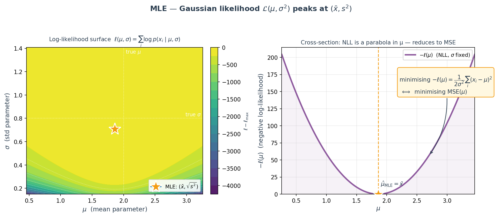
For a Gaussian model with fixed $\sigma$, the NLL as a function of $\mu$ is $\tfrac{1}{2\sigma^2}\sum (x_i-\mu)^2$ — a quadratic in $\mu$ with a positive leading coefficient. Convexity guarantees a unique global minimum. Adding a linear predictor $f_\theta(x)=\mathbf w^\top x + b$ keeps convexity in $(\mathbf w, b)$ for linear regression, which is why ordinary least squares has a closed form $\hat{\mathbf w}=(X^\top X)^{-1}X^\top y$.
The constant $\tfrac{1}{2\sigma^2}$ is absorbed into the learning rate when we drop it from the loss — the argmin is unaffected. In heteroscedastic regression (σ depends on $x$), we cannot drop it; weighting each residual by $1/\sigma_i^2$ becomes part of the loss (weighted least squares).
| Assumed $p(y\mid x;\theta)$ | Task | NLL reduces to |
|---|---|---|
| Gaussian $\mathcal N(f_\theta(x),\sigma^2)$ | Regression | MSE (L2) |
| Laplace $\text{Lap}(f_\theta(x),b)$ | Regression (heavy tails) | MAE (L1) |
| Bernoulli $\text{Ber}(\sigma(f_\theta(x)))$ | Binary classification | BCE |
| Categorical $\text{Cat}(\operatorname{softmax}(f_\theta(x)))$ | Multi-class | Cross-entropy |
| Poisson $\text{Poi}(e^{f_\theta(x)})$ | Count regression | Poisson NLL |
| Student-t $t_\nu(f_\theta(x),\sigma)$ | Regression with outliers | Robust NLL (smooth L1-like) |
MLE assumes every parameter value is equally plausible before seeing data. Adding a prior $p(\theta)$ injects a preference — and the posterior's mode (MAP estimate) gives a loss with a regularisation term built in. The shape of the prior is the shape of the regulariser.
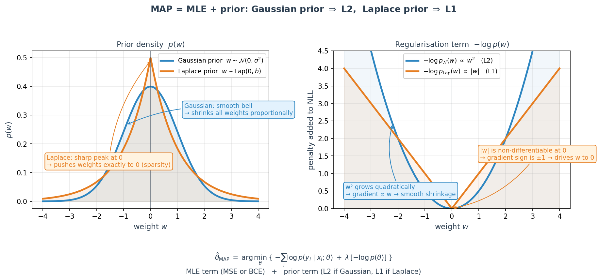
Set $\lambda=\tfrac{1}{2\tau^2}$ (or $\tfrac{1}{b}$) and the familiar regularised loss falls out:
| L2 (ridge) | L1 (lasso) | ElasticNet | |
|---|---|---|---|
| Prior | Gaussian | Laplace | Mixture |
| Penalty | $\lambda\|w\|_2^2$ | $\lambda\|w\|_1$ | $\lambda_1\|w\|_1+\lambda_2\|w\|_2^2$ |
| Effect | Smooth shrinkage | Sparsity (exact zeros) | Grouped sparsity |
| Correlated features | Splits weight evenly | Picks one, zeros the rest | Keeps groups together |
| Closed form | Yes (ridge regression) | No (coordinate descent) | No |
At $w=0$, the L2 gradient is also 0 — no force to push a small weight past zero. The L1 subgradient at $w=0$ is the interval $[-\lambda, \lambda]$: as long as the data-fit gradient falls inside this interval, the optimum stays at zero. This is proximal shrinkage — the mathematical source of sparse models and feature selection.
import tensorflow as tf
from tensorflow.keras import losses, regularizers, layers, Model
# ── Regression: Gaussian noise ⇒ MSE ────────────────────────────
mse = losses.MeanSquaredError() # ½·mean((y−ŷ)²)
mae = losses.MeanAbsoluteError() # Laplace noise ⇒ L1
huber = losses.Huber(delta=1.0) # Gaussian core, Laplace tail
logcosh = losses.LogCosh() # smooth approximation of MAE
# ── Classification: Bernoulli / Categorical ⇒ cross-entropy ─────
bce = losses.BinaryCrossentropy(from_logits=True)
cce = losses.CategoricalCrossentropy(from_logits=True) # one-hot y
sce = losses.SparseCategoricalCrossentropy(from_logits=True) # integer y
# ALWAYS use from_logits=True in practice — numerically stable
# (combines softmax + log in one pass, avoids log(0))
# ── Distribution matching: KL divergence ────────────────────────
kl = losses.KLDivergence() # for teacher-student, VAEs
# KL(p‖q) = Σ p(x) log(p(x)/q(x)) — not symmetric!
# ── Rare-class focus: focal loss (manual) ───────────────────────
def focal_loss(gamma=2.0, alpha=0.25):
def loss(y_true, y_pred):
p_t = tf.where(tf.equal(y_true, 1), y_pred, 1 - y_pred)
alpha_t = tf.where(tf.equal(y_true, 1), alpha, 1 - alpha)
return -tf.reduce_mean(alpha_t * tf.pow(1-p_t, gamma)
* tf.math.log(p_t + 1e-8))
return loss
# ── L1 / L2 regularisation ≡ Laplace / Gaussian prior on weights ─
model = tf.keras.Sequential([
layers.Dense(128, activation="relu",
kernel_regularizer=regularizers.l2(1e-4)), # Gaussian prior
layers.Dense(64, activation="relu",
kernel_regularizer=regularizers.l1(1e-5)), # Laplace prior
layers.Dense(32, activation="relu",
kernel_regularizer=regularizers.l1_l2(1e-5, 1e-4)),# ElasticNet
layers.Dense(1),
])
# Custom NLL: model predicts (μ, log σ) of a Gaussian
def gaussian_nll(y_true, y_pred):
mu, log_sigma = y_pred[..., 0], y_pred[..., 1]
sigma = tf.exp(log_sigma)
return 0.5 * tf.reduce_mean(
tf.math.log(2*3.14159) + 2*log_sigma
+ ((y_true - mu) / sigma) ** 2
) # this IS MSE when σ is constant — now it's learnedfrom_logits=True — fused softmax+log is stablefrom_logits=False with a softmax output layer. Doing so applies softmax twice — once in the model, once inside the loss — and yields silently wrong gradients. Prefer a bare Dense(n_classes) final layer and from_logits=True, or use an explicit softmax and from_logits=False. Pick one convention and enforce it.
A: Assume $y_i = f_\theta(x_i) + \varepsilon_i$ with $\varepsilon_i \sim \mathcal N(0,\sigma^2)$ i.i.d. Then $p(y_i\mid x_i;\theta) = \tfrac{1}{\sigma\sqrt{2\pi}}\exp\!\left(-\tfrac{(y_i - f_\theta(x_i))^2}{2\sigma^2}\right)$. Taking logs and negating: $-\log p = \tfrac{1}{2\sigma^2}(y_i - f_\theta(x_i))^2 + \text{const}$. Summing over $i$ and dropping terms that do not depend on $\theta$: $\hat\theta_{\mathrm{MLE}} = \arg\min_\theta \sum_i (y_i - f_\theta(x_i))^2$ — i.e., MSE. The key: Gaussian noise is the hidden assumption. Change the noise (Laplace → MAE, Student-t → robust NLL) and MSE is no longer justified.
A: Classification heads end in a sigmoid $\hat y = \sigma(z)$ whose derivative $\sigma'(z) = \hat y(1-\hat y)$ collapses toward zero as $\hat y\to 0$ or $1$. Under MSE, the gradient w.r.t. the logit $z$ is $(y-\hat y)\cdot\sigma'(z)$ — a tiny mistake ($y=0$, $\hat y=0.99$) gets multiplied by $0.99\cdot0.01\approx 10^{-2}$, so the model cannot correct a confident wrong prediction. BCE's gradient is $(\hat y - y)$ directly — no sigmoid-derivative factor, so the same mistake produces a gradient of magnitude 0.99. This is the saturation problem that drove the field from squared-error to log-loss for classification.
A: Consider a single weight $w$. Its gradient contribution from L2 is $2\lambda w$ — zero at $w=0$, so nothing holds the weight at zero. From L1 it is $\lambda\cdot\mathrm{sign}(w)$, a discontinuous jump of $2\lambda$ across zero. Equivalently, the L1 subgradient at $w=0$ is the interval $[-\lambda,\lambda]$. As long as the data-fit gradient at $w=0$ lies inside that interval, the KKT optimum stays at $w=0$. Only when the data-fit gradient exceeds $\lambda$ in magnitude does $w$ move off zero. Result: weights with weak support in the data get exactly zeroed — feature selection for free.
A: They differ by the entropy of the target: $\mathrm{CE}(p,q) = H(p) + \mathrm{KL}(p\|q)$. If $p$ is a hard label (one-hot), $H(p)=0$ and CE = KL; they are interchangeable. If $p$ is a soft distribution (teacher logits in distillation, noisy labels with label smoothing, VAE posteriors), $H(p)$ is a constant w.r.t. the model, so minimising CE still minimises KL — but you cannot interpret the absolute loss value as a distance. Use CE for standard supervised classification; use KL explicitly when the target distribution is itself parameterised (VAEs where $q$ is the approximate posterior and $p$ is a prior, or policy gradient methods).
A: Extreme class imbalance (e.g. dense object detection, where background vastly outnumbers objects). Standard BCE gives every example equal weight — thousands of easy negatives dominate the gradient, and the rare hard positives contribute almost nothing. Focal loss multiplies BCE by $(1-p_t)^\gamma$ where $p_t$ is the predicted probability of the true class: confident-correct examples ($p_t\to 1$) get down-weighted by $(1-p_t)^\gamma\to 0$, freeing the gradient to focus on hard examples. $\gamma=2$ is typical. It can be derived as NLL under a re-weighted Bernoulli where the effective class prior depends on the prediction — so it is still a principled loss, not a hack.
from_logits=False with a softmax final layer — applies softmax twice; loss still decreases but gradients are wrong.Ch.15 gave you the right loss. But a single scalar in the console is a blunt instrument — it cannot distinguish a vanishing gradient from an over-regularised model, a frozen early layer from a perfectly converged one, or a useful embedding from a noisy blob. TensorBoard instruments the training loop: per-epoch scalars, per-layer weight and gradient histograms, per-run projector views of the learned representation. This chapter is about reading training, not just running it.
TensorBoard has no mathematics of its own — it reads event files written during training and renders them. The value comes from mapping each panel to a mathematical failure mode you learned in earlier chapters.
| Panel | What it logs | Diagnoses |
|---|---|---|
| Scalars | loss, metrics per epoch | Underfit / overfit / LR too high |
| Histograms | weight & gradient distributions | Vanishing / exploding gradients |
| Distributions | percentile ribbons of same data | Activation collapse, dead neurons |
| Projector | hidden-layer embeddings in 2D/3D | Feature quality (cluster separation) |
| Images | arbitrary tensors as images | Sample predictions, feature maps |
| Profile | GPU/CPU utilisation timeline | Training bottlenecks (dataloader, H2D) |
Loss is an aggregate — $\mathcal L(\theta) = \tfrac{1}{n}\sum_i \ell(y_i,\hat y_i)$ collapses every gradient flow, every weight update, every representation into one number per epoch. Two very different models can produce the same curve: a healthy deep network and a shallow one whose first four layers are frozen. Histograms and the projector tell them apart in one glance.
That product of $L-1$ Jacobians is why deep networks break. If each factor has operator norm $\approx 0.5$, the gradient at layer 1 is $0.5^{L-1}$ times the gradient at layer $L$ — exponentially small. TensorBoard's gradient histogram for layer 1 collapses to a spike at zero; layer $L$ stays wide. That visual is the vanishing-gradient problem.
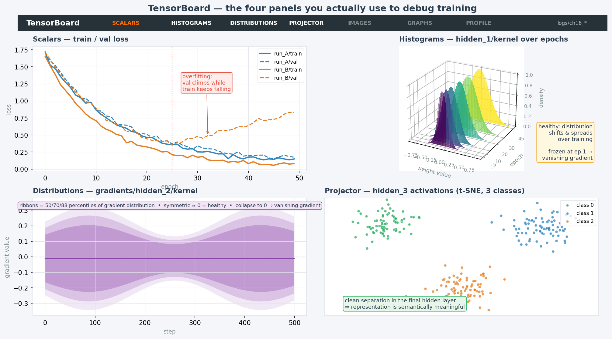
| Shape | Diagnosis | Fix |
|---|---|---|
| train ↓ val ↓ small gap | Healthy | Keep going |
| train ↓ val ↑ widening | Overfitting | Regularise, early-stop, more data |
| both flat / barely moving | Underfitting or bad LR | Increase capacity, raise LR, longer warmup |
| both spiky / diverging | LR too high, exploding grads | Lower LR, clip gradients |
| val drops then plateaus | LR too low in late phase | LR schedule (cosine / step decay) |
A roughly Gaussian distribution whose centre and spread drift between epochs. "Moving" is the key word — frozen histograms are the danger signal, not wide ones.
Early-layer histograms become visually identical across epochs 5 onwards. Gradient histograms for those layers are a sharp spike at zero. Fix: He init + ReLU, residual connections (Ch.7), batch norm (Ch.6).
A spike at exactly zero in the gradient histogram for a specific layer. That layer's neurons output 0 on every example — no gradient can flow. Fix: LeakyReLU, lower LR, He init.
| Argument | Off / Low | Sweet spot | Too high |
|---|---|---|---|
histogram_freq | 0: no histograms | 1 (every epoch) | per-batch → huge disk, no value |
update_freq | 'epoch' = one scalar/epoch | 'epoch' for long runs | 'batch' → floods Scalars UI |
profile_batch | 0: off | 2 (skip warmup batch 1) | many batches → training slowdown |
write_graph | False | True once, to verify | Re-logging every run: wasted I/O |
embeddings_freq | 0: no projector | 5–10 epochs | 1 → very slow; large payload |
Write every run to logs/run_YYYYMMDD_HHMMSS/. If two runs share a directory, TensorBoard aggregates their curves and overlays become unreadable. Treating the log directory as append-only is the single most common mistake.
NaN at step 0, open the code; do not open TensorBoard.
import tensorflow as tf
from tensorflow import keras
import datetime, os, numpy as np
# One timestamped subdirectory per run
log_dir = 'logs/ch16_' + datetime.datetime.now().strftime('%Y%m%d_%H%M%S')
tb_cb = keras.callbacks.TensorBoard(
log_dir = log_dir,
histogram_freq = 1, # weight + bias histograms/epoch
write_graph = True,
update_freq = 'epoch', # avoid 'batch' in prod
profile_batch = 0, # '2,4' = profile batches 2..4
)
# Train (model = Ch.5's 3-layer Dense net)
model.fit(X_tr, y_tr, validation_data=(X_va, y_va),
epochs=50, batch_size=256,
callbacks=[tb_cb], verbose=0)
# Custom scalar — learning rate on its own tag
writer = tf.summary.create_file_writer(log_dir + '/custom')
class LRLogger(keras.callbacks.Callback):
def on_epoch_end(self, epoch, logs=None):
with writer.as_default():
tf.summary.scalar('learning_rate',
self.model.optimizer.learning_rate.numpy(),
step=epoch)
# Embedding Projector: hidden-layer activations
emb = keras.Model(model.input,
model.get_layer('hidden_3').output)
Z = emb.predict(X_te[:500], verbose=0) # (500, 16)
pdir = os.path.join(log_dir, 'projector')
os.makedirs(pdir, exist_ok=True)
np.savetxt(os.path.join(pdir, 'feature_vecs.tsv'),
Z, delimiter='\t')
with open(os.path.join(pdir, 'metadata.tsv'), 'w') as f:
f.write('MedHouseVal\n')
for v in y_te[:500, 0]:
f.write(f'{v:.3f}\n')
# tensorboard --logdir logs/histogram_freq=1, update_freq='epoch'tf.summary.scalar(tag, v, step)update_freq='batch' + 100k steps creates hundreds of thousands of scalar events per run; the UI lags and the event file swells. Use 'epoch' by default; switch to 'batch' only for a single short debug run.
A: Open the Histograms panel and compare the weight distribution for each layer at epoch 1 vs epoch $N$. In a healthy network, every layer's histogram shifts and spreads between epochs. If layer 1's histogram is indistinguishable from its epoch-1 shape, that layer is frozen — the gradient is vanishing before it reaches layer 1, even though the loss (driven by later layers) is still decreasing. Confirm by looking at the gradient histogram for that layer: a sharp spike at zero means no signal is flowing through. Loss alone cannot diagnose this because later layers can carry the loss down while early layers sit idle.
A: The gradient w.r.t. that layer's weights is almost exactly zero for almost every example in the batch. Two common causes: (1) dead ReLU — the pre-activation of every neuron in the layer is negative for every input, so $\mathrm{ReLU}'=0$ and nothing propagates back; (2) saturated sigmoid/tanh — the activation has been pushed into its flat region by a too-high learning rate or bad initialisation. Fix: switch to LeakyReLU (keeps a small gradient for negative pre-activations), use He initialisation (scales variance correctly for ReLU), and lower the learning rate. Batch norm (Ch.6) also helps by re-centring activations.
update_freq='batch' in production?A: Two reasons. First, disk: a run with 10k steps writes one scalar event per step per metric, so a modest multi-metric run produces hundreds of thousands of events and hundreds of megabytes of log data. Second, UI: TensorBoard downsamples to render, but with that many points the Scalars view becomes laggy and noisy — any real signal is buried in batch-level noise. Epoch-level granularity is sufficient to diagnose all the patterns you actually care about (over/underfit, LR, divergence). Use 'batch' only for a single short debug run (<1000 steps) where you need to see a spike location precisely.
A: It answers "did the model learn a meaningful representation?" — independent of the loss. Take the activations of the last hidden layer on a held-out set, write them as a TSV of vectors plus a metadata TSV (labels or target values), and Projector will reduce them to 2D/3D via PCA or t-SNE in the browser. If the points of the same class cluster tightly and clusters are well-separated, the network has learned discriminative features. If everything is a single blob, you have a high-loss and a non-informative representation — consider capacity, regularisation, or data quality. This catches the failure mode where loss is low but features are degenerate (e.g. a collapsed embedding in contrastive learning).
A: Only when training is slow and Scalars/Histograms show the model is otherwise healthy. Set profile_batch=2 (or a small range like '2,4') — batch 1 is warmup and should be excluded. Open the Profile tab to see the per-step timeline: if the GPU kernel bar is narrow and there are large gaps of CPU-side dataloader activity, your input pipeline is the bottleneck — use tf.data.AUTOTUNE, prefetching, and cache(). If kernel launches dominate, batch size is too small. If H2D (host-to-device) bars are long, move more preprocessing onto the GPU. Profiling more than a few batches adds measurable overhead — do it surgically.
histogram_freq=1 on a very large model (doubles per-epoch time due to extra forward passes over the data). Use 5 on big runs.Ch.8's LSTM fixed the vanishing gradient but paid with serialisation — token $t+1$ cannot start until token $t$ finishes. Ch.18's transformer throws that away and replaces recurrence with attention: a single differentiable operation that lets every position look directly at every other position, all at once. This bridge chapter is deliberately short — one mental model (soft dictionary lookup), three building blocks (dot-product similarity, softmax, Q/K/V projections), and the permutation-equivariance fact that forces Ch.18 to invent positional encoding.
Everything Ch.18 does — scaled dot-product attention, multi-head, self-attention, cross-attention — is an elaboration of one equation. Before we can appreciate transformers, we need the three ingredients that equation rests on.
Positive = aligned ("similar"). Zero = orthogonal ("unrelated"). Negative = opposed. If both vectors are unit-norm, the dot product is cosine similarity — the measure every attention mechanism is built on.
Converts any vector of scores into a probability distribution. Temperature $\tau$: as $\tau\to 0$ the distribution collapses to one-hot (hard argmax); as $\tau\to\infty$ it becomes uniform. Softmax is differentiable everywhere — argmax is not. That single fact is the only reason attention can be trained by gradient descent.
If one key matches much better than the rest, softmax concentrates almost all weight there and the soft lookup becomes hard. If several match, the output is a blend. That is the entire concept.
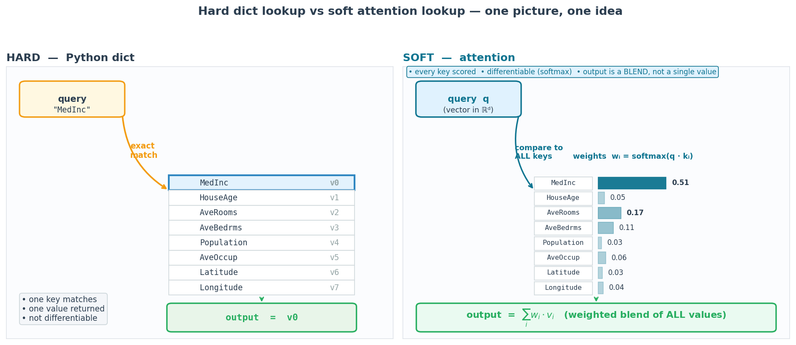
A hard dict makes a binary decision per key: matches or not. That decision is non-differentiable — you cannot pass a gradient through an if. The softmax replaces the hard branch with a smooth interpolation: every key contributes, weighted by how well it matches. The output is never exactly one value — it is always a convex combination over all values.
When the scores are very spread out ($q\cdot k_1 \gg q\cdot k_j$ for all $j\neq 1$), the softmax concentrates almost all mass on index 1 — the output is essentially $v_1$. This is "attention acting like a dictionary". When scores are close, the output is a true mixture. The dial between these two regimes is the softmax temperature / $\sqrt{d_k}$ factor.
| RNN / LSTM (Ch.8) | Attention | |
|---|---|---|
| Dependence | $h_t$ needs $h_{t-1}$ | all positions parallel |
| Compute time | $O(T)$ sequential steps | $O(1)$ parallel step |
| Total FLOPs | $O(T\cdot d^2)$ | $O(T^2\cdot d)$ |
| Long-range links | fades across $T$ steps | one softmax hop |
| GPU fit | poor (serial) | excellent (matmul) |
The $T^2$ term is attention's one weakness — it is why a 100k-token context is expensive. But on modern GPUs, a big $T^2$ matmul still beats $T$ sequential cell updates for any realistic $T$.
If you shuffle the input tokens, the output tokens shuffle in the same order — attention is permutation-equivariant. "The dog bit the man" and "the man bit the dog" are identical to raw attention. That fact forces Ch.18 to inject position explicitly via positional encoding.
Every transformer block takes one sequence of input embeddings and projects each token into three different roles via three learned weight matrices:
| Symbol | Role | Analogy |
|---|---|---|
| Q — query | what this token is looking for | the question I ask of the sequence |
| K — key | what this token advertises | the label I wear so others can find me |
| V — value | what this token actually carries | the payload I deliver when selected |
Using the same vector for $Q$, $K$, and $V$ forces "what I want" to equal "how I advertise" to equal "what I carry". That is rarely true: a token might ask for an adjective, advertise itself as a noun, and carry a specific lemma. Three learned projections decouple these roles — which is what makes attention an expressive learnable operator rather than a fixed similarity.
The key object produced by a single attention layer is a $T\times T$ matrix of weights:
k1 k2 k3 k4
┌──────────────────────┐
q1 → │ 0.70 0.10 0.10 0.10 │ row 1: distribution over all keys
q2 → │ 0.20 0.50 0.20 0.10 │
q3 → │ 0.10 0.30 0.40 0.20 │
q4 → │ 0.10 0.20 0.20 0.50 │
└──────────────────────┘
every row sums to 1Row $i$ is a probability distribution over keys: "when I am at position $i$, how much attention do I pay to each other position?" The matrix is not symmetric — position 1 attending to position 2 is not the same as position 2 attending to position 1 (different queries, different keys).
import numpy as np
def softmax(x, axis=-1):
x = x - x.max(axis=axis, keepdims=True) # numerical stability
e = np.exp(x)
return e / e.sum(axis=axis, keepdims=True)
def soft_lookup(q, keys, values, tau=1.0):
"""Attention from first principles — one query."""
scores = keys @ q / tau # (n_keys,)
weights = softmax(scores) # (n_keys,)
output = weights @ values # (d_value,)
return output, weights
# 8 California-housing features as "tokens" in R^4.
# (In Ch.18 these come from learned projections W_Q, W_K, W_V.)
rng = np.random.default_rng(42)
feats = ["MedInc","HouseAge","AveRooms","AveBedrms",
"Population","AveOccup","Latitude","Longitude"]
X = rng.normal(size=(8, 4)) # (T=8, d=4)
# Single-query soft lookup (query = MedInc)
q = X[0]
out, w = soft_lookup(q, X, X)
for name, wi in zip(feats, w):
print(f"{name:12s} attention = {wi:.3f}")
# Full self-attention (every token as its own query)
def self_attention(X, tau=None):
d = X.shape[-1]
tau = tau or np.sqrt(d) # Ch.18 convention
scores = X @ X.T / tau # (T, T)
W = softmax(scores, axis=-1) # rows sum to 1
return W @ X, W # (T, d), (T, T)
Y, A = self_attention(X)
print("Attention matrix (rows sum to 1):\n", A.round(2))
print("A.sum(axis=1) =", A.sum(axis=1)) # all 1.0A: Attention is a soft dictionary lookup. You have a query, a set of keys, and a set of values. Instead of matching one key exactly (like a Python dict), you compute the similarity (dot product) between the query and every key, turn those similarities into weights with a softmax, and return the weighted average of every value. If one key matches much better than the rest, softmax concentrates the weight there and the result approximates a hard lookup; otherwise you get a principled blend. That is the entire mechanism — the transformer formula is just this written in matrix form with a variance-control factor.
A: Differentiability. Argmax is not differentiable — its derivative is zero almost everywhere and undefined at ties — so you cannot backpropagate through it. Softmax is smooth and differentiable everywhere, so the attention mechanism has a well-defined gradient with respect to the query and key projections. A secondary reason is that softmax preserves information: it assigns some weight to every key, so the model can recover from an imperfect initial alignment. Argmax would commit to one key per step and lose the signal from the rest. Without softmax there is no trainable attention.
A: Because attention is permutation-equivariant. If you permute the input tokens, the output tokens are permuted in exactly the same way — the set of output representations does not change. Mathematically, attention operates on an unordered set; it has no built-in notion of "first" vs "second". For a sequence model this is fatal: "the dog bit the man" and "the man bit the dog" would produce the same representation. Positional encoding injects the index as an additive (or concatenated) signal to the token embedding so that position becomes part of what the model sees. Without it, the transformer loses order entirely.
A: Because the three roles — asking, advertising, and delivering — are genuinely different and need different linear subspaces. $W_Q$ projects the input into the space of "questions this token might ask"; $W_K$ into the space of "labels this token advertises"; $W_V$ into the space of "content this token contributes". Tying them (e.g. $W_Q=W_K$) forces the similarity to be symmetric and the attended content to equal the key — a severe restriction. With independent projections, a token can ask for an adjective while advertising as a noun while carrying its lemma. The three-matrix design is what makes attention a flexible learnable operator rather than a fixed similarity.
A: $O(T^2 \cdot d)$ where $T$ is sequence length and $d$ is model dimension. The $T^2$ term is what matters — it comes from comparing every query to every key, i.e. computing the $T\times T$ attention matrix. Doubling context length quadruples compute and memory for the matrix; that is why long-context transformers are expensive. The $d$ factor is the per-dot-product cost; compared to $T^2$ it is usually modest. Approximations (sparse, linear, Performer, Longformer) trade some expressivity for sub-quadratic cost in $T$. Interviewers ask this because they want to hear you name $T^2$, not the FLOP count.
Ch.17 established attention as a soft dictionary lookup. This chapter dresses that one mechanism up into the transformer — the architecture inside every LLM, every embedding model, every image foundation model in use today. Learned $W_Q, W_K, W_V$ projections, a $\sqrt{d_k}$ denominator to keep softmax gradients healthy, $H$ heads running in parallel so the model sees several relationship patterns at once, sinusoidal positional encoding to inject order, and residual + LayerNorm + FFN sub-layers. As of 2017 this replaced RNNs for nearly every sequence task.
Ch.17's soft-lookup equation $\sum_i \text{softmax}(q\cdot k_i/\tau)\,v_i$ assumed $q, k_i, v_i$ were given. Transformers learn them. Given an input sequence $\mathbf{X}\in\mathbb{R}^{T\times d_\text{model}}$, three projection matrices turn every token into its own query, key, and value:
$\mathbf{W}^Q,\mathbf{W}^K\in\mathbb{R}^{d_\text{model}\times d_k}$, $\mathbf{W}^V\in\mathbb{R}^{d_\text{model}\times d_v}$. So $\mathbf{Q},\mathbf{K}\in\mathbb{R}^{T\times d_k}$ and $\mathbf{V}\in\mathbb{R}^{T\times d_v}$. These are the only new learned parameters — attention itself has no weights.
$\mathbf{Q}\mathbf{K}^\top\in\mathbb{R}^{T\times T}$ is the matrix of raw similarity scores between every pair of positions. Row-wise softmax turns each row into a distribution over positions; multiplying by $\mathbf{V}$ produces, for each query, a weighted average of all values.
Each head has its own small projections of width $d_k=d_v=d_\text{model}/H$. Concatenating gives $H\cdot d_v = d_\text{model}$, and $\mathbf{W}^O\in\mathbb{R}^{d_\text{model}\times d_\text{model}}$ mixes the heads back. Total attention parameter count: $4\,d_\text{model}^2$ (one $d_\text{model}\times d_\text{model}$ matrix per Q/K/V/O when $d_k=d_\text{model}/H$).
One softmax distribution can only emphasise one pattern per query. With $H$ heads, the model can track $H$ relationship types at once — e.g. one head follows syntactic dependencies, another tracks co-reference, a third anchors to a pivot feature.
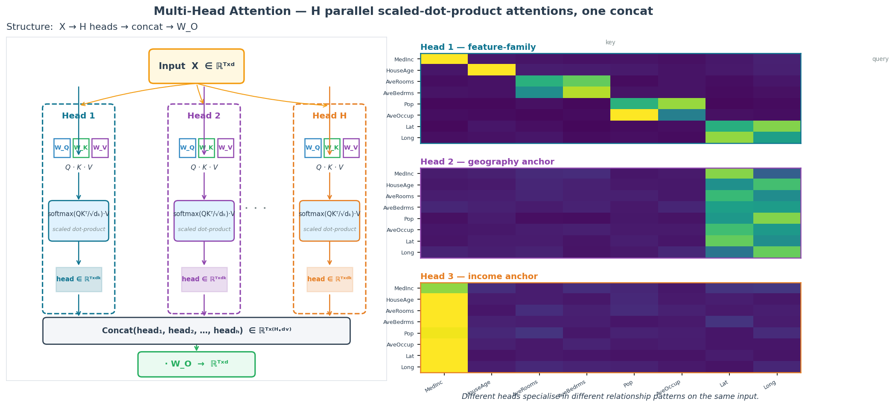
For $d_\text{model}=512, H=8$, each head has $d_k=64$. Attention parameters:
Roughly 1 M parameters for one multi-head attention block — less than one FFN sub-layer of the same block.
Add $\mathbf{M}$ to the scaled scores before softmax: $M_{ij}=0$ if $j\le i$, $-\infty$ otherwise. An upper-triangular $-\infty$ mask reduces softmax to lower-triangular weights — future positions get zero attention. That single line is the entire BERT-vs-GPT architectural distinction.
Shuffle the input tokens and multi-head attention's output shuffles identically — the mechanism has no inherent notion of order. We inject position by adding a $(T, d_\text{model})$ positional-encoding vector to the token embeddings before the first attention layer:
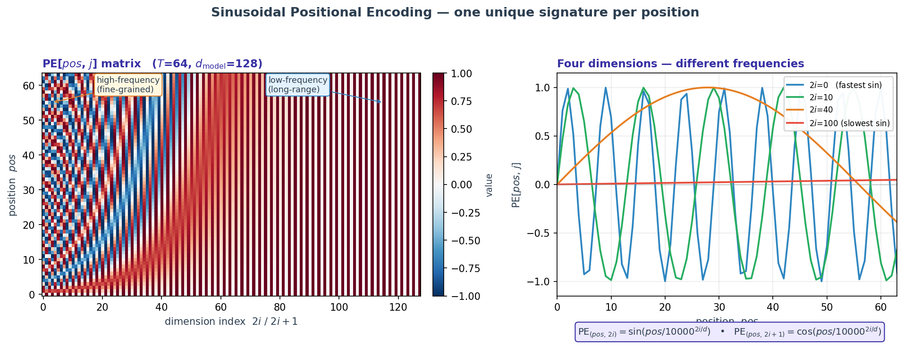
import tensorflow as tf
from tensorflow.keras import layers, Input, Model
def encoder_block(d_model=64, num_heads=4, ffn_dim=256, dropout=0.1):
"""Pre-norm encoder block: LN → MHA → +res; LN → FFN → +res."""
inp = Input(shape=(None, d_model)) # (T, d_model)
# --- sub-layer 1: multi-head self-attention ---
x = layers.LayerNormalization(epsilon=1e-6)(inp)
x = layers.MultiHeadAttention(
num_heads=num_heads,
key_dim=d_model // num_heads, # d_k per head
dropout=dropout)(x, x) # self-attention: Q = K = V = x
x = layers.Add()([inp, x]) # residual 1
# --- sub-layer 2: position-wise feed-forward ---
z = layers.LayerNormalization(epsilon=1e-6)(x)
z = layers.Dense(ffn_dim, activation='relu')(z) # expand to 4 × d_model
z = layers.Dropout(dropout)(z)
z = layers.Dense(d_model)(z) # project back
out = layers.Add()([x, z]) # residual 2
return Model(inp, out, name='EncoderBlock')MultiHeadAttention won't do it for you.)Dot products of $d_k$-dim vectors with unit-variance components have variance $d_k$. Without scaling, scores grow with $d_k$ and softmax saturates — the derivative collapses and gradients through attention vanish. Dividing by $\sqrt{d_k}$ holds the score variance at 1 regardless of head width.
A single softmax distribution can only concentrate on one pattern per query. Multi-head runs $H$ smaller attentions in parallel, each able to specialise in a different relationship (syntactic, co-reference, anchor, etc.). It is the same parameter budget as one giant head, sliced into $H$ independent projections and then mixed with $W^O$.
Residuals let gradients flow around attention and FFN sub-layers, preventing vanishing gradients in deep stacks — the same trick as ResNet (Ch.7). LayerNorm normalises across the feature dimension per token, which is scale-invariant to batch size and to sequence length — unlike BatchNorm.
Self-attention is permutation-equivariant — shuffle inputs, outputs shuffle identically. The model has no ordering signal. PE (sinusoidal, learned, RoPE, or ALiBi) injects it. Without PE, "the dog bit the man" and "the man bit the dog" are indistinguishable.
One line of code: add an upper-triangular $-\infty$ mask to the attention scores. That's it. Encoder (BERT-style) sees the full sequence; decoder (GPT-style) sees only past positions and is trained with next-token prediction.
Time and memory are $O(T^2\cdot d)$ — quadratic in sequence length because $QK^\top$ is $T\times T$. This is why context windows are expensive. FlashAttention recomputes softmax on tiles to reduce memory to $O(T)$ without changing the output; it is the main reason 100k+ context is affordable.
You now have every piece — a neural network (Ch.4), backprop and optimisers (Ch.5), regularisation (Ch.6), loss functions (Ch.15), and the transformer (Ch.18). Time to pick numbers. This chapter is the decision guide: which knob, what it does, which direction to turn it, in what order, and how to tell whether a change actually helped or was noise.
A model's parameters ($W,b$) are learned from data. A model's hyperparameters are chosen before training begins and define how learning happens. Among them, one dial dominates:
Start at $\eta=10^{-7}$, multiply by $1.1$ every step, and plot loss vs $\log\eta$. Pick $\eta$ one order of magnitude below the loss-curve minimum — where the loss is still dropping sharply, but not yet erratic.
Gradient noise scales as $1/\sqrt{B}$. If you multiply batch size by $k$, multiply the learning rate by $k$ too — up to the point where the large-batch LR becomes unstable. Beyond that, you need warmup.
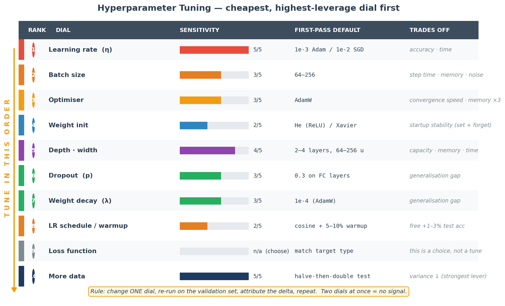
Tries every combination on a regular lattice. For $k$ dials with $n$ values each: $n^k$ runs. Wastes budget sweeping dials that barely matter. Fine for 1–2 dials, terrible beyond.
Samples each dial independently from its prior (log-uniform for LR and WD, categorical for optimiser). 5–10× more efficient than grid in high dimensions — because most dials don't matter and random search doesn't over-sample them.
Fits a surrogate $P(\text{loss}\mid\text{hyperparams})$ and proposes the next point with the highest expected improvement. Needs the fewest trials — essential when a single training run costs hours (Optuna, Hyperopt, Vizier).
A population of models trains in parallel; periodically, low-performers copy the weights and hyperparams of high-performers, then perturb. Best at huge scale where re-starting a run is prohibitively expensive.
import optuna
from sklearn.datasets import fetch_california_housing
from sklearn.model_selection import train_test_split
from sklearn.preprocessing import StandardScaler
from sklearn.neural_network import MLPRegressor
from sklearn.metrics import r2_score
X, y = fetch_california_housing(return_X_y=True)
X_tr, X_te, y_tr, y_te = train_test_split(X, y, test_size=0.2, random_state=42)
sc = StandardScaler().fit(X_tr); X_tr, X_te = sc.transform(X_tr), sc.transform(X_te)
def objective(trial):
lr = trial.suggest_float("lr", 1e-5, 1e-1, log=True) # most sensitive
width = trial.suggest_categorical("width", [32, 64, 128, 256]) # power-of-two
depth = trial.suggest_int("depth", 1, 5)
alpha = trial.suggest_float("alpha", 1e-6, 1e-2, log=True) # sklearn L2
bs = trial.suggest_categorical("batch_size", [32, 64, 128, 256])
model = MLPRegressor(
hidden_layer_sizes=tuple([width] * depth),
activation="relu", solver="adam",
learning_rate_init=lr, alpha=alpha, batch_size=bs,
early_stopping=True, n_iter_no_change=10,
max_iter=200, random_state=42)
model.fit(X_tr, y_tr)
return r2_score(y_te, model.predict(X_te))
study = optuna.create_study(direction="maximize")
study.optimize(objective, n_trials=40, show_progress_bar=True)
print("best R²:", study.best_value); print("best params:", study.best_params)Learning rate. It directly controls step size; too low ⇒ training crawls, too high ⇒ divergence. An LR-range test finds a good one in minutes; no other dial has that short a feedback loop.
1–2 dials → grid is fine. 3–8 dials on a cheap model → random search. Expensive runs (transformer pre-training) → Bayesian (Optuna TPE). Huge scale with parallel resources → population-based training.
Look at the gap. Training loss low, validation loss high and rising ⇒ overfitting ⇒ regularise / more data. Both losses high and flat ⇒ underfitting ⇒ bigger model, better features, or train longer. The gap, not the absolute numbers, is the diagnostic.
If you multiply batch size by $k$, multiply learning rate by $k$. Rationale: gradient noise scales as $1/\sqrt{B}$, so bigger batches give smoother gradients and a bigger step is safe. Breaks at very large batch, where you also need warmup.
If you are bias-limited (train loss already high), collecting more of the same data keeps the ceiling the same. The fix is a bigger model, better features, or longer training. More data is only the fix for high variance, not high bias.
Attribution. Changing two dials and getting a 2% gain tells you nothing — you don't know which dial earned the gain, or whether they partially cancelled. Change one, measure, attribute, repeat. Budget permitting, run 3+ seeds before declaring a winner, because seed variance is typically ~1%.